← 回股市觀察
逐檔技術線型分析
2026/11/17 · 成交金額上市前 50 名 ＋ 上櫃前 20 名（共 70 檔）· 公開資料整理
40092.11
加權指數 -947.97 點（-2.31%）
234 / 789
上市個股上漲／下跌家數
上漲 21.6% · 下跌 72.8% · 持平 5.6%（共 1084 檔）
162 / 651
上櫃個股上漲／下跌家數
上漲 18.7% · 下跌 75.1% · 持平 6.2%（共 867 檔）
統計範圍：當日成交金額上市前 50 名 ＋ 上櫃前 20 名（共 70 檔，皆為 4 位數代號的個股，不含 ETF／權證）。
兩個市場各自取前 N 名後合併呈現，卡片上標示市場別（上市／上櫃），清單也附市場分布。
條件統計：上市 上升趨勢：底底高 ＋ 頭頭高 0 檔、突破頸線 2 檔、底底高 0 檔、頭頭高 8 檔、站上月線 7 檔、月線向上 5 檔、外資買超 26 檔、量價攻擊（收紅＋大量） 6 檔、跌破前低（線型轉弱） 15 檔；上櫃 上升趨勢：底底高 ＋ 頭頭高 0 檔、突破頸線 0 檔、底底高 1 檔、頭頭高 2 檔、站上月線 2 檔、月線向上 4 檔、外資買超 13 檔、量價攻擊（收紅＋大量） 4 檔、跌破前低（線型轉弱） 6 檔。
五項全滿足（底底高＋頭頭高＋站上月線＋月線向上＋5 日線向上）：上市 無；上櫃 無。
資料日 2026/11/17。籌碼：上市為證交所三大法人、上櫃為櫃買中心三大法人；上櫃另附融資餘額。
每一檔都附上 K 線圖與線型說明：黃圈是轉折低點、粉圈是轉折高點、藍線是月線。
圖上兩條水平虛線、左側標數值：高點頸線（紅，連到最多「轉折高點」的那條水平線，代表上方壓力帶；收盤站上就算突破）與
低點頸線（綠，連到最多「轉折低點」的那條水平線，代表下方支撐帶；收盤跌破就算跌破）；
兩條線都只看最近 6 個轉折點、容忍同一價位帶 4%，連不到 2 個轉折點就不畫。
卡片的標籤可以點回上方對應清單，清單裡的股名也可以點到該檔。
本頁為公開資料（證交所每日收盤行情與三大法人、櫃買中心每日收盤行情與三大法人、Yahoo 股市日線）的整理與觀察，
不構成投資建議，不報牌、不預測、不下買賣決策。
大盤趨勢快篩（加權指數） 資料日 2026/11/17・來源：證交所公開資料
主狀態：跌破月線
前一交易日對照（11/16）：跌破月線（量比 20 0.95） → 今日跌破月線（量比 20 1.06）
指標、數值、判定（點開看 12 項明細：均線位置／排列、月線方向、頸線、轉折結構、位階、量價…）
加權指數今天跌 947.97 點（-2.31%），收 40,092.11、跌破月線 43,986.95；月線還在下彎，MA5 這條短均還沒收復，離高點頸線 47,615.17 還差 15.80%。
- 均線位置：4 條均線站上 0 條；沒站上的是 MA5 42,431.27（收盤比它低 5.51%）、MA10 42,075.52（收盤比它低 4.71%）、MA20 43,986.95（收盤比它低 8.85%）、MA60 46,047.96（收盤比它低 12.93%）
- 月線方向：月線 MA20 現在 43,986.95，比 5 個交易日前低 1,409.69 點 → 下彎
- 量能：集中市場成交 10,128.7 億，比 5 日均量大一些（1.05 倍）、比 20 日均量大一些（1.06 倍）
- 關鍵價位：高點頸線 47,615.17，還差 15.80%；低點頸線 38,610.95，還在下方 3.84%
- 大小型股：加權 -2.31%、櫃買 -3.92%，兩邊同向

圖說：加權指數日 K（與個股圖相同標記）：黃圈＝轉折低點、粉圈＝轉折高點、虛線小圈＝還沒確認的轉折、藍線＝月線 MA20、水平虛線＝高點／低點頸線。最後一根是資料日當天。
本區塊為公開資料的技術面觀察，不構成投資建議，
不報牌、不預測、不下買賣決策。成交金額為集中市場總成交金額（含 ETF／權證），
與頁首摘要的「上市個股成交金額」口徑不同。標籤是統計，不是評分、也不是推薦。
上市 vs 上櫃（同期快篩）
加權 -2.31% vs 櫃買 -3.92%（同向） → 同向
（兩個市場分開寫，不合併成一個數字；櫃買為 TPEX 公開資料）
櫃買歷史：TPEX 逐日回補 130 根；來源：櫃買中心 www/zh-tw/indexInfo/sectinx（逐日，官方；OpenAPI tpex_index 只回當月）
（TPEX OpenAPI 只回當月，故逐日回補；歷史不足就不算該條均線並標「資料不足」，不用錯數字）
近 20 個交易日大盤狀態回溯（最新在上）（點開看逐日主狀態／量比／量價象限）
用同一支程式回算最近 20 個交易日（主狀態 S1~S8 與量比 20 皆為當日收盤當時的判定，
不是事後調整）；量比 20 未公布的日子寫「—」。
好條件最多的（前 10）
不好條件最多的（前 10）
本期市場狀態：空頭（等權指數在 60 日均線之下）（空頭期間：趨勢類條件反向（回測後 20 日差距 −0.9% ~ −2.1%），本排行改用超跌反轉類（跌破前低／在月線之下／月線下彎））
好條件（4 項）：跌破前低、在月線之下、月線下彎、外資買超。
不好條件（5 項）：站上月線、月線向上、突破頸線、量價攻擊（收紅＋大量）、外資賣超。
兩邊都是同一組資料（日線結構＋當日收盤量價籌碼）算出來的「符合項目數」，只是方向相反；
條件數不是評分、也不是推薦，不構成投資建議。
量價攻擊（收紅＋大量）（10 上市 6／上櫃 4）
跌破前低（線型轉弱）（21 上市 15／上櫃 6）
逐檔分析（70 檔）
區間或轉弱 成交金額 1354.65 億・全榜第 1 名（上市第 1 名）
好條件 2/4：在月線之下、月線下彎
不好條件 1/5：外資賣超
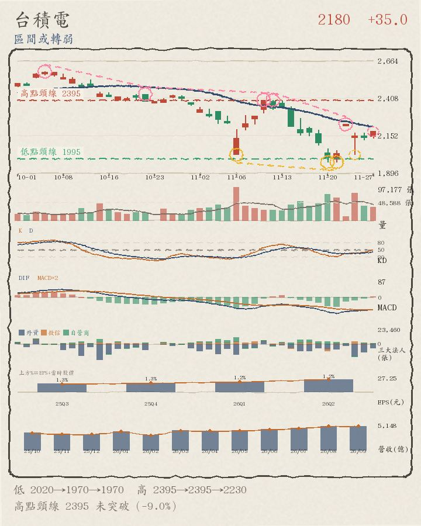
今天帶量收黑、跌破月線 2322.75，離高點頸線 2435 還差 10.9%，轉折還沒走出明顯方向。
- 月線位置：收盤 2170 在月線 2322.75 之下；5 日線 2294 也在月線之下（短均在下）；月線走平或向下、5 日線向上
- 量能：成交量是 20 日均量的 1.76 倍，比 20 日均量大不少；收黑卻量增，量價背離
- 關鍵價位：高點頸線 2435 還沒突破，差 10.9%；最近轉折高點 2395（低於 9.4%）；最近轉折低點 2020（高於 7.4%）
- 轉折結構：低點 2375、2375、2020 與高點 2435、2395、2395 都沒有明顯遞增，屬於區間震盪或轉弱；還沒確認的轉折低點 11-04 2235、11-17 2155；還沒確認的轉折高點 11-09 2290（圖上虛線小圈）
區間或轉弱 成交金額 607.45 億・全榜第 2 名（上市第 2 名）
好條件 2/4：在月線之下、月線下彎
不好條件 2/5：量價攻擊（收紅＋大量）、外資賣超

今天帶量收紅、跌破月線 3891.25，離高點頸線 5480 還差 29.9%，轉折還沒走出明顯方向。
- 月線位置：收盤 3840 在月線 3891.25 之下；5 日線 3919 也在月線之上（短均在上）；月線走平或向下、5 日線向上
- 量能：成交量是 20 日均量的 1.39 倍，比 20 日均量大不少；收紅又量增，量價配合
- 關鍵價位：高點頸線 5480 還沒突破，差 29.9%；最近轉折高點 4245（低於 9.5%）；最近轉折低點 3115（高於 23.3%）
- 轉折結構：低點 4430、4875、3115 與高點 5480、5165、4245 都沒有明顯遞增，屬於區間震盪或轉弱；還沒確認的轉折低點 11-17 3695；還沒確認的轉折高點 11-10 4065、11-13 4235（圖上虛線小圈）
區間或轉弱 成交金額 327.23 億・全榜第 3 名（上市第 3 名）
好條件 2/4：在月線之下、月線下彎
不好條件 1/5：外資賣超

今天帶量收黑、跌破月線 288.875，離高點頸線 325.5 還差 19.7%，轉折還沒走出明顯方向。
- 月線位置：收盤 261.5 在月線 288.875 之下；5 日線 289.1 也在月線之上（短均在上）；月線走平或向下、5 日線向上
- 量能：成交量是 20 日均量的 1.16 倍，比 20 日均量大不少；收黑卻量增，量價背離
- 關鍵價位：高點頸線 325.5 還沒突破，差 19.7%；最近轉折高點 325.5（低於 19.7%）；最近轉折低點 224.5（高於 16.5%）
- 轉折結構：低點 223、295、224.5 與高點 325.5、325、325.5 都沒有明顯遞增，屬於區間震盪或轉弱；還沒確認的轉折低點 11-17 252；還沒確認的轉折高點 11-02 308（圖上虛線小圈）
區間或轉弱 成交金額 258.26 億・全榜第 4 名（上市第 4 名）
好條件 3/4：在月線之下、月線下彎、外資買超
不好條件 0/5：無

今天帶量收黑、跌破月線 1332，離高點頸線 2115 還差 50.1%，轉折還沒走出明顯方向。
- 月線位置：收盤 1055 在月線 1332 之下；5 日線 1190 也在月線之下（短均在下）；月線走平或向下、5 日線向上
- 量能：成交量是 20 日均量的 1.54 倍，比 20 日均量大不少；收黑卻量增，量價背離
- 關鍵價位：高點頸線 2115 還沒突破，差 50.1%；最近轉折高點 1335（低於 21.0%）；最近轉折低點 1020（高於 3.4%）
- 轉折結構：低點 1560、1810、1020 與高點 1965、2115、1335 都沒有明顯遞增，屬於區間震盪或轉弱；還沒確認的轉折低點 11-11 1230、11-17 1025（圖上虛線小圈）
剛突破前高 成交金額 253.37 億・全榜第 5 名（上市第 5 名）
好條件 2/4：在月線之下、月線下彎
不好條件 1/5：外資賣超

今天帶量收黑、跌破月線 7427.5，離高點頸線 8750 還差 20.3%，高點還在墊高（但底部沒同步墊高）。
- 月線位置：收盤 6975 在月線 7427.5 之下；5 日線 7816 也在月線之上（短均在上）；月線走平或向下、5 日線向上
- 量能：成交量是 20 日均量的 1.44 倍，比 20 日均量大不少；收黑卻量增，量價背離
- 關鍵價位：高點頸線 8750 還沒突破，差 20.3%；最近轉折高點 8255（低於 15.5%）；最近轉折低點 5765（高於 21.0%）
- 轉折結構：高點 8750、8490、8255 墊高 4.7%（頭頭高），但低點 7065、7200、5765 沒有同步墊高；還沒確認的轉折低點 11-04 6390、11-17 6975；還沒確認的轉折高點 11-13 8645（圖上虛線小圈）
區間或轉弱 成交金額 247.95 億・全榜第 6 名（上市第 6 名）
好條件 4/4：跌破前低、在月線之下、月線下彎、外資買超
不好條件 0/5：無

今天帶量收黑、跌破月線 909.9，跌破前一個轉折低點（高點頸線 1420 還在收盤上方），轉折還沒走出明顯方向。
- 月線位置：收盤 637 在月線 909.9 之下；5 日線 757 也在月線之下（短均在下）；月線走平或向下、5 日線走平或向下
- 量能：成交量是 20 日均量的 1.56 倍，比 20 日均量大不少；收黑卻量增，量價背離
- 關鍵價位：高點頸線 1420 還沒突破、還在收盤上方 55.1%；最近轉折高點 894（低於 28.7%）；最近轉折低點 720（低於 11.5%）
- 轉折結構：低點 932、1040、720 與高點 1420、1180、894 都沒有明顯遞增，屬於區間震盪或轉弱；還沒確認的轉折低點 11-17 637；還沒確認的轉折高點 11-02 1020（圖上虛線小圈）
區間或轉弱 成交金額 207.35 億・全榜第 7 名（上市第 7 名）
好條件 4/4：跌破前低、在月線之下、月線下彎、外資買超
不好條件 0/5：無

今天帶量收黑、跌破月線 458.8，跌破前一個轉折低點（高點頸線 686 還在收盤上方），轉折還沒走出明顯方向。
- 月線位置：收盤 361 在月線 458.8 之下；5 日線 395.5 也在月線之下（短均在下）；月線走平或向下、5 日線走平或向下
- 量能：成交量是 20 日均量的 1.44 倍，比 20 日均量大不少；收黑卻量增，量價背離
- 關鍵價位：高點頸線 686 還沒突破、還在收盤上方 47.4%；最近轉折高點 442（低於 18.3%）；最近轉折低點 364.5（低於 1.0%）
- 轉折結構：低點 548、506、364.5 與高點 601、686、442 都沒有明顯遞增，屬於區間震盪或轉弱；還沒確認的轉折低點 11-12 405.5、11-17 351.5；還沒確認的轉折高點 11-12 441（圖上虛線小圈）
區間或轉弱 成交金額 206.27 億・全榜第 8 名（上市第 8 名）
好條件 4/4：跌破前低、在月線之下、月線下彎、外資買超
不好條件 0/5：無

今天帶量收黑、跌破月線 4485，跌破前一個轉折低點（高點頸線 5485 還在收盤上方），轉折還沒走出明顯方向。
- 月線位置：收盤 3540 在月線 4485 之下；5 日線 4031 也在月線之下（短均在下）；月線走平或向下、5 日線走平或向下
- 量能：成交量是 20 日均量的 1.56 倍，比 20 日均量大不少；收黑卻量增，量價背離
- 關鍵價位：高點頸線 5485 還沒突破、還在收盤上方 35.5%；最近轉折高點 4565（低於 22.5%）；最近轉折低點 3690（低於 4.1%）
- 轉折結構：低點 4855、4930、3690 與高點 5485、5295、4565 都沒有明顯遞增，屬於區間震盪或轉弱；還沒確認的轉折低點 11-12 4065、11-17 3420；還沒確認的轉折高點 11-02 4835（圖上虛線小圈）
剛突破前高 成交金額 175.82 億・全榜第 10 名（上市第 9 名）
好條件 1/4：月線下彎
不好條件 2/5：站上月線、外資賣超

今天帶量收黑、站上月線 3468.75，離高點頸線 4490 還差 19.9%，高點還在墊高（但底部沒同步墊高）。
- 月線位置：收盤 3595 在月線 3468.75 之上；5 日線 3720 也在月線之上（短均在上）；月線走平或向下、5 日線向上
- 量能：成交量是 20 日均量的 2.15 倍，比 20 日均量大不少；收黑卻量增，量價背離
- 關鍵價位：高點頸線 4490 還沒突破，差 19.9%；最近轉折高點 3825（低於 6.0%）；最近轉折低點 2665（高於 34.9%）
- 轉折結構：高點 4490、3835、3825 墊高 6.8%（頭頭高），但低點 3585、3260、2665 沒有同步墊高；還沒確認的轉折低點 11-17 3500；還沒確認的轉折高點 11-16 4085（圖上虛線小圈）
區間或轉弱 成交金額 169.7 億・全榜第 11 名（上市第 10 名）
好條件 3/4：在月線之下、月線下彎、外資買超
不好條件 0/5：無

今天帶量收黑、跌破月線 403.95，離高點頸線 537 還差 38.7%，轉折還沒走出明顯方向。
- 月線位置：收盤 329 在月線 403.95 之下；5 日線 363.9 也在月線之下（短均在下）；月線走平或向下、5 日線走平或向下
- 量能：成交量是 20 日均量的 1.10 倍，比 20 日均量大一些；收黑卻量增，量價背離
- 關鍵價位：高點頸線 537 還沒突破，差 38.7%；最近轉折高點 417（低於 21.1%）；最近轉折低點 324（高於 1.5%）
- 轉折結構：低點 488、412、324 與高點 537、497.5、417 都沒有明顯遞增，屬於區間震盪或轉弱；還沒確認的轉折低點 11-17 316；還沒確認的轉折高點 11-10 402（圖上虛線小圈）
區間或轉弱 成交金額 153.18 億・全榜第 12 名（上市第 11 名）
好條件 2/4：在月線之下、月線下彎
不好條件 1/5：外資賣超
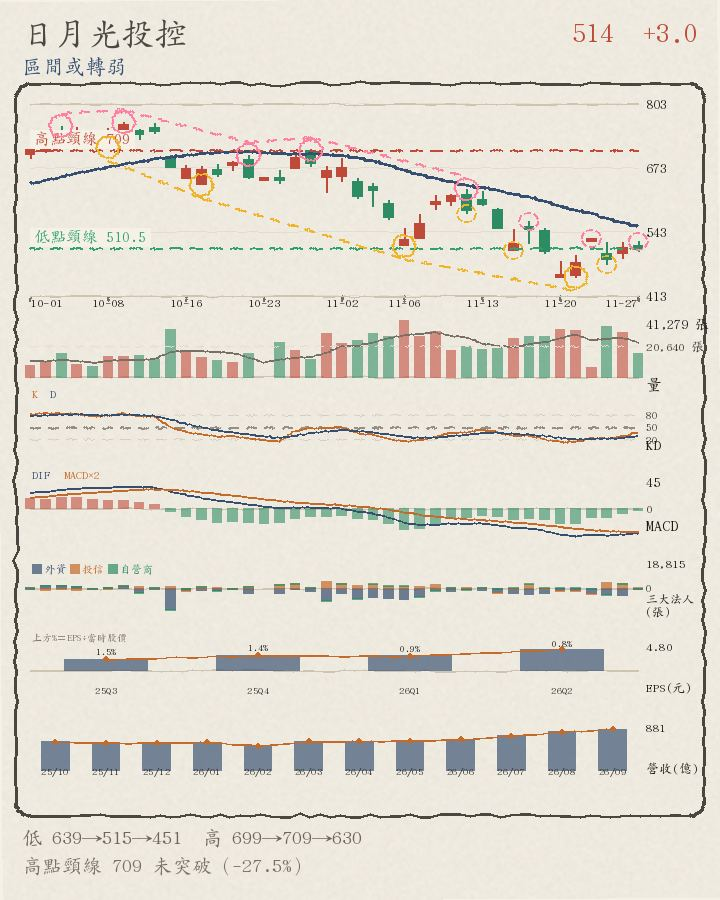
今天帶量收黑、跌破月線 620.1，離高點頸線 709 還差 26.7%，轉折還沒走出明顯方向。
- 月線位置：收盤 520 在月線 620.1 之下；5 日線 574.2 也在月線之下（短均在下）；月線走平或向下、5 日線走平或向下
- 量能：成交量是 20 日均量的 1.26 倍，比 20 日均量大不少；收黑卻量增，量價背離
- 關鍵價位：高點頸線 709 還沒突破，差 26.7%；最近轉折高點 630（低於 17.5%）；最近轉折低點 515（高於 1.0%）
- 轉折結構：低點 715、639、515 與高點 699、709、630 都沒有明顯遞增，屬於區間震盪或轉弱；還沒確認的轉折低點 11-12 580、11-17 506；還沒確認的轉折高點 11-02 692（圖上虛線小圈）
區間或轉弱 成交金額 127.95 億・全榜第 13 名（上市第 12 名）
好條件 2/4：在月線之下、月線下彎
不好條件 2/5：量價攻擊（收紅＋大量）、外資賣超
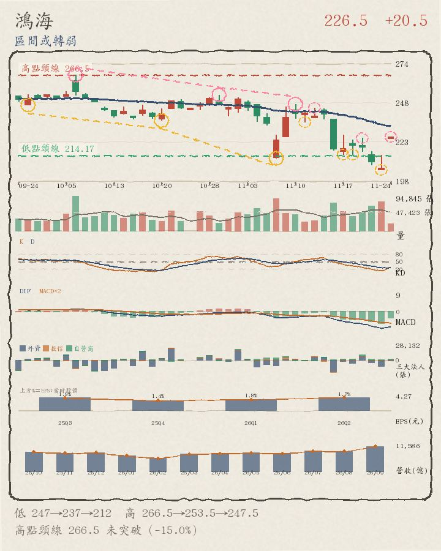
今天帶量收紅、跌破月線 240.55，離高點頸線 266.5 還差 17.8%，轉折還沒走出明顯方向。
- 月線位置：收盤 219 在月線 240.55 之下；5 日線 232.1 也在月線之下（短均在下）；月線走平或向下、5 日線走平或向下
- 量能：成交量是 20 日均量的 1.24 倍，比 20 日均量大不少；收紅又量增，量價配合
- 關鍵價位：高點頸線 266.5 還沒突破，差 17.8%；最近轉折高點 247.5（低於 11.5%）；最近轉折低點 212.5（高於 3.1%）
- 轉折結構：低點 247、237、212.5 與高點 266.5、253.5、247.5 都沒有明顯遞增，屬於區間震盪或轉弱；還沒確認的轉折低點 11-11 236、11-17 215；還沒確認的轉折高點 11-02 252、11-12 245（圖上虛線小圈）
區間或轉弱 成交金額 122.76 億・全榜第 14 名（上市第 13 名）
好條件 2/4：在月線之下、月線下彎
不好條件 1/5：外資賣超

今天帶量收黑、跌破月線 2924，離高點頸線 3700 還差 33.2%，轉折還沒走出明顯方向。
- 月線位置：收盤 2470 在月線 2924 之下；5 日線 2813 也在月線之下（短均在下）；月線走平或向下、5 日線向上
- 量能：成交量是 20 日均量的 1.58 倍，比 20 日均量大不少；收黑卻量增，量價背離
- 關鍵價位：高點頸線 3700 還沒突破，差 33.2%；最近轉折高點 3060（低於 19.3%）；最近轉折低點 2310（高於 6.9%）
- 轉折結構：低點 3050、2310、2310 與高點 3700、3450、3060 都沒有明顯遞增，屬於區間震盪或轉弱；還沒確認的轉折低點 11-12 2750、11-17 2470；還沒確認的轉折高點 11-03 3115（圖上虛線小圈）
區間或轉弱 成交金額 118.05 億・全榜第 15 名（上市第 14 名）
好條件 3/4：在月線之下、月線下彎、外資買超
不好條件 0/5：無
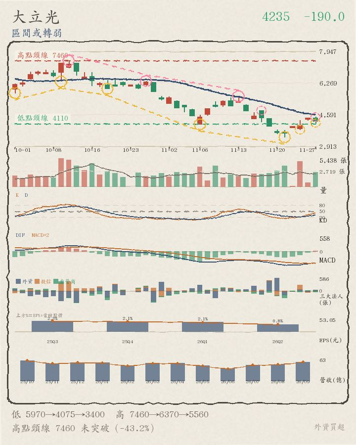
今天帶量收黑、跌破月線 5375，離高點頸線 7460 還差 39.5%，轉折還沒走出明顯方向。
- 月線位置：收盤 4515 在月線 5375 之下；5 日線 4997 也在月線之下（短均在下）；月線走平或向下、5 日線向上
- 量能：成交量是 20 日均量的 1.12 倍，比 20 日均量大一些；收黑卻量增，量價背離
- 關鍵價位：高點頸線 7460 還沒突破，差 39.5%；最近轉折高點 6370（低於 29.1%）；最近轉折低點 4075（高於 10.8%）
- 轉折結構：低點 6355、5970、4075 與高點 6750、7460、6370 都沒有明顯遞增，屬於區間震盪或轉弱；還沒確認的轉折低點 11-17 4355；還沒確認的轉折高點 11-13 5560（圖上虛線小圈）
區間或轉弱 成交金額 113.3 億・全榜第 16 名（上市第 15 名）
好條件 2/4：在月線之下、月線下彎
不好條件 1/5：外資賣超

今天收黑、成交量也比平均少、跌破月線 109.185，離高點頸線 168.5 還差 45.2%，轉折還沒走出明顯方向。
- 月線位置：收盤 92.4 在月線 109.185 之下；5 日線 98.82 也在月線之下（短均在下）；月線走平或向下、5 日線向上
- 量能：成交量是 20 日均量的 0.84 倍，比 20 日均量少很多
- 關鍵價位：高點頸線 168.5 還沒突破，差 45.2%；最近轉折高點 107.5（低於 14.0%）；最近轉折低點 88.6（高於 4.3%）
- 轉折結構：低點 135、151.5、88.6 與高點 168.5、165、107.5 都沒有明顯遞增，屬於區間震盪或轉弱；還沒確認的轉折低點 11-17 90.2（圖上虛線小圈）
剛突破前高 成交金額 109.51 億・全榜第 18 名（上市第 16 名）
好條件 0/4：無
不好條件 3/5：站上月線、月線向上、外資賣超

今天收黑、成交量也比平均少、站上月線 68.115，離高點頸線 73.6 還差 6.2%，高點還在墊高（但底部沒同步墊高）。
- 月線位置：收盤 69 在月線 68.115 之上；5 日線 77.82 也在月線之上（短均在上）；月線向上、5 日線向上
- 量能：成交量是 20 日均量的 0.78 倍，比 20 日均量少很多
- 關鍵價位：高點頸線 73.6 還沒突破，差 6.2%；最近轉折高點 70（低於 1.4%）；最近轉折低點 54.1（高於 27.5%）
- 轉折結構：高點 61.7、73.6、70 墊高 27.9%（頭頭高），但低點 56.6、58.8、54.1 沒有同步墊高；還沒確認的轉折低點 11-17 69；還沒確認的轉折高點 11-13 89.5（圖上虛線小圈）
臻鼎-KY 4958 上市
370.5 -25.5
區間或轉弱 成交金額 95.34 億・全榜第 19 名（上市第 17 名）
好條件 2/4：在月線之下、月線下彎
不好條件 1/5：外資賣超

今天收黑、成交量也比平均少、跌破月線 469.55，離高點頸線 614 還差 39.7%，轉折還沒走出明顯方向。
- 月線位置：收盤 370.5 在月線 469.55 之下；5 日線 419.5 也在月線之下（短均在下）；月線走平或向下、5 日線向上
- 量能：成交量是 20 日均量的 0.92 倍，比 20 日均量少一些
- 關鍵價位：高點頸線 614 還沒突破，差 39.7%；最近轉折高點 466.5（低於 20.6%）；最近轉折低點 355（高於 4.4%）
- 轉折結構：低點 463.5、518、355 與高點 613、614、466.5 都沒有明顯遞增，屬於區間震盪或轉弱；還沒確認的轉折低點 11-12 429、11-17 361.5；還沒確認的轉折高點 11-02 499（圖上虛線小圈）
區間或轉弱 成交金額 94.14 億・全榜第 20 名（上市第 18 名）
好條件 4/4：跌破前低、在月線之下、月線下彎、外資買超
不好條件 0/5：無

今天收黑、跌破月線 5893.25，跌破前一個轉折低點（高點頸線 6655 還在收盤上方），轉折還沒走出明顯方向。
- 月線位置：收盤 4335 在月線 5893.25 之下；5 日線 5265 也在月線之下（短均在下）；月線走平或向下、5 日線走平或向下
- 量能：成交量是 20 日均量的 0.98 倍，跟 20 日均量差不多
- 關鍵價位：高點頸線 6655 還沒突破、還在收盤上方 34.9%；最近轉折高點 6360（低於 31.8%）；最近轉折低點 4970（低於 12.8%）
- 轉折結構：低點 6760、5710、4970 與高點 6655、6595、6360 都沒有明顯遞增，屬於區間震盪或轉弱；還沒確認的轉折低點 11-04 5800、11-17 4335（圖上虛線小圈）
區間或轉弱 成交金額 93.19 億・全榜第 21 名（上市第 19 名）
好條件 3/4：在月線之下、月線下彎、外資買超
不好條件 0/5：無

今天帶量收黑、跌破月線 1018.95，離高點頸線 1295 還差 35.5%，轉折還沒走出明顯方向。
- 月線位置：收盤 835 在月線 1018.95 之下；5 日線 963.4 也在月線之下（短均在下）；月線走平或向下、5 日線向上
- 量能：成交量是 20 日均量的 1.09 倍，比 20 日均量大一些；收黑卻量增，量價背離
- 關鍵價位：高點頸線 1295 還沒突破，差 35.5%；最近轉折高點 1085（低於 23.0%）；最近轉折低點 782（高於 6.8%）
- 轉折結構：低點 950、1120、782 與高點 1295、1190、1085 都沒有明顯遞增，屬於區間震盪或轉弱；還沒確認的轉折低點 11-12 968、11-17 835；還沒確認的轉折高點 11-02 1080（圖上虛線小圈）
區間或轉弱 成交金額 76.05 億・全榜第 22 名（上市第 20 名）
好條件 4/4：跌破前低、在月線之下、月線下彎、外資買超
不好條件 0/5：無

今天收黑、成交量也比平均少、跌破月線 820.55，跌破前一個轉折低點（高點頸線 1150 還在收盤上方），轉折還沒走出明顯方向。
- 月線位置：收盤 542 在月線 820.55 之下；5 日線 644 也在月線之下（短均在下）；月線走平或向下、5 日線走平或向下
- 量能：成交量是 20 日均量的 0.84 倍，比 20 日均量少很多
- 關鍵價位：高點頸線 1150 還沒突破、還在收盤上方 52.9%；最近轉折高點 1065（低於 49.1%）；最近轉折低點 666（低於 18.6%）
- 轉折結構：低點 941、666、666 與高點 835、1150、1065 都沒有明顯遞增，屬於區間震盪或轉弱；還沒確認的轉折低點 11-17 542；還沒確認的轉折高點 11-10 752（圖上虛線小圈）
區間或轉弱 成交金額 75.48 億・全榜第 23 名（上市第 21 名）
好條件 2/4：在月線之下、月線下彎
不好條件 1/5：外資賣超
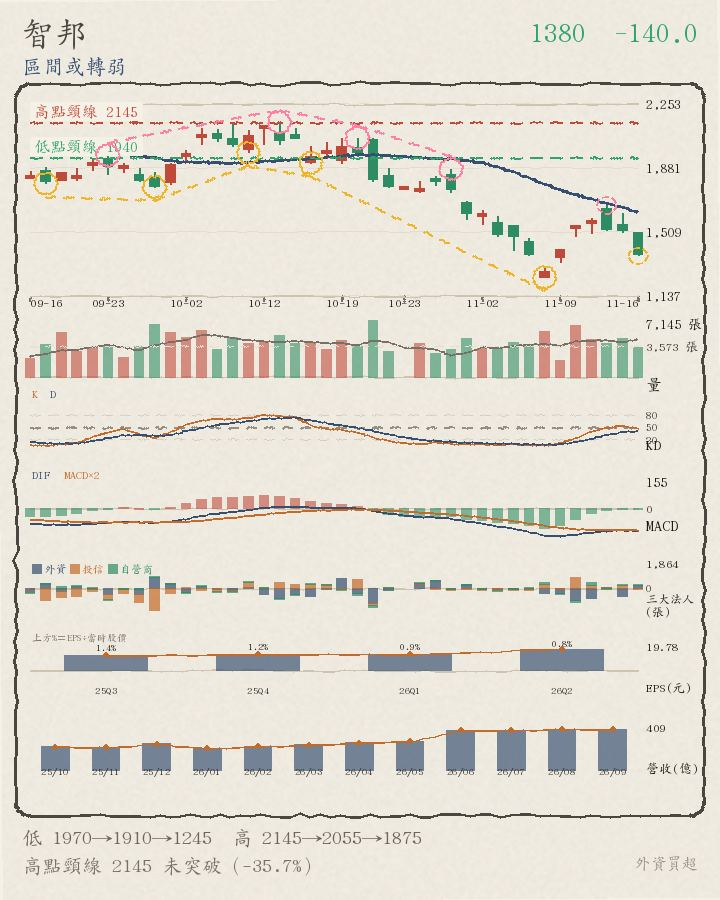
今天帶量收黑、跌破月線 1590.5，離高點頸線 2055 還差 35.3%，轉折還沒走出明顯方向。
- 月線位置：收盤 1330 在月線 1590.5 之下；5 日線 1466 也在月線之下（短均在下）；月線走平或向下、5 日線向上
- 量能：成交量是 20 日均量的 1.32 倍，比 20 日均量大不少；收黑卻量增，量價背離
- 關鍵價位：高點頸線 2055 還沒突破，差 35.3%；最近轉折高點 1665（低於 20.1%）；最近轉折低點 1245（高於 6.8%）
- 轉折結構：低點 1970、1910、1245 與高點 2055、1875、1665 都沒有明顯遞增，屬於區間震盪或轉弱；還沒確認的轉折低點 11-17 1290（圖上虛線小圈）
高點墊高、底部不穩 成交金額 75.46 億・全榜第 24 名（上市第 22 名）
好條件 2/4：在月線之下、月線下彎
不好條件 1/5：外資賣超

今天帶量收黑、跌破月線 200.75，離高點頸線 266 還差 30.6%，高點還在墊高（但底部沒同步墊高）。
- 月線位置：收盤 184.5 在月線 200.75 之下；5 日線 194.3 也在月線之下（短均在下）；月線走平或向下、5 日線向上
- 量能：成交量是 20 日均量的 1.28 倍，比 20 日均量大不少；收黑卻量增，量價背離
- 關鍵價位：高點頸線 266 還沒突破，差 30.6%；最近轉折高點 266（低於 30.6%）；最近轉折低點 149（高於 23.8%）
- 轉折結構：高點 235、261、266 墊高 13.2%（頭頭高），但低點 219、228、149 沒有同步墊高；還沒確認的轉折低點 11-17 181.5；還沒確認的轉折高點 11-02 209、11-13 215.5（圖上虛線小圈）
區間或轉弱 成交金額 75.41 億・全榜第 25 名（上市第 23 名）
好條件 4/4：跌破前低、在月線之下、月線下彎、外資買超
不好條件 0/5：無
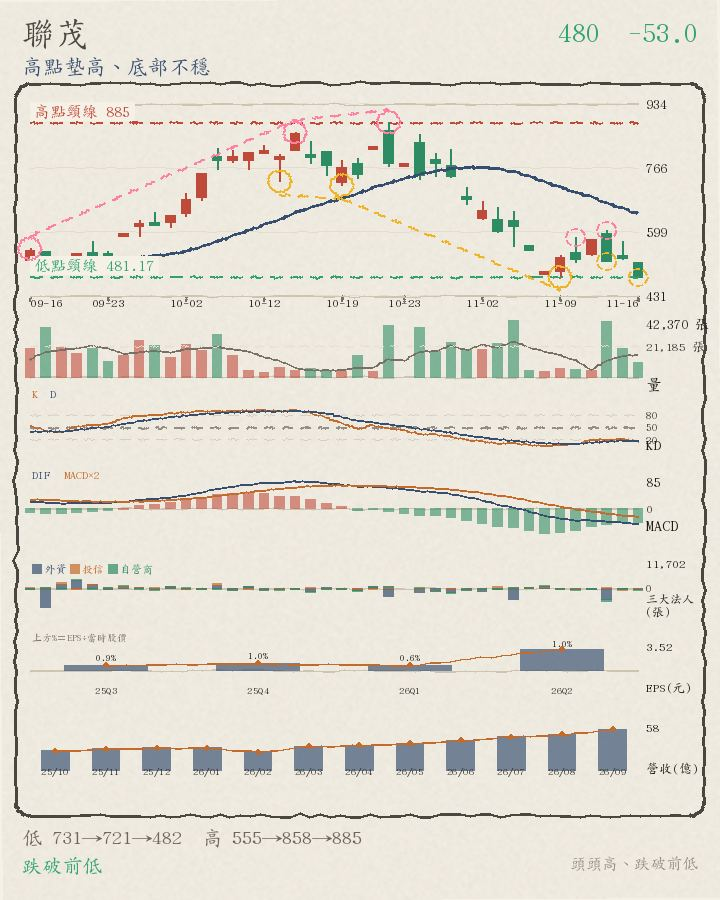
今天收黑、成交量也比平均少、跌破月線 630.15，跌破前一個轉折低點（高點頸線 885 還在收盤上方），轉折還沒走出明顯方向。
- 月線位置：收盤 432 在月線 630.15 之下；5 日線 509.4 也在月線之下（短均在下）；月線走平或向下、5 日線走平或向下
- 量能：成交量是 20 日均量的 0.93 倍，比 20 日均量少一些
- 關鍵價位：高點頸線 885 還沒突破、還在收盤上方 51.2%；最近轉折高點 602（低於 28.2%）；最近轉折低點 481.5（低於 10.3%）
- 轉折結構：低點 731、721、481.5 與高點 858、885、602 都沒有明顯遞增，屬於區間震盪或轉弱；還沒確認的轉折低點 11-12 522、11-17 432；還沒確認的轉折高點 11-10 584（圖上虛線小圈）
區間或轉弱 成交金額 74.82 億・全榜第 26 名（上市第 24 名）
好條件 4/4：跌破前低、在月線之下、月線下彎、外資買超
不好條件 0/5：無

今天帶量收黑、跌破月線 239.8，跌破前一個轉折低點（高點頸線 310 還在收盤上方），轉折還沒走出明顯方向。
- 月線位置：收盤 176.5 在月線 239.8 之下；5 日線 205.5 也在月線之下（短均在下）；月線走平或向下、5 日線走平或向下
- 量能：成交量是 20 日均量的 1.95 倍，比 20 日均量大不少；收黑卻量增，量價背離
- 關鍵價位：高點頸線 310 還沒突破、還在收盤上方 43.1%；最近轉折高點 235（低於 24.9%）；最近轉折低點 201（低於 12.2%）
- 轉折結構：低點 284、255、201 與高點 310、284.5、235 都沒有明顯遞增，屬於區間震盪或轉弱；還沒確認的轉折低點 11-02 245.5、11-17 173.5；還沒確認的轉折高點 11-02 263（圖上虛線小圈）
區間或轉弱 成交金額 71.84 億・全榜第 27 名（上市第 25 名）
好條件 3/4：跌破前低、在月線之下、月線下彎
不好條件 1/5：外資賣超
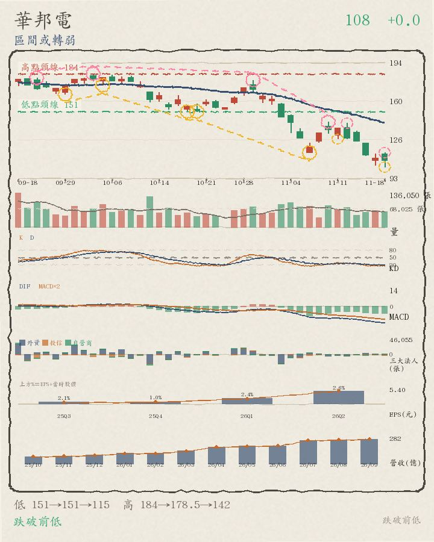
今天收黑、跌破月線 143.425，跌破前一個轉折低點（高點頸線 184 還在收盤上方），轉折還沒走出明顯方向。
- 月線位置：收盤 110.5 在月線 143.425 之下；5 日線 122.5 也在月線之下（短均在下）；月線走平或向下、5 日線走平或向下
- 量能：成交量是 20 日均量的 1.01 倍，跟 20 日均量差不多
- 關鍵價位：高點頸線 184 還沒突破、還在收盤上方 39.9%；最近轉折高點 142（低於 22.2%）；最近轉折低點 115（低於 3.9%）
- 轉折結構：低點 151、151、115 與高點 184、178.5、142 都沒有明顯遞增，屬於區間震盪或轉弱；還沒確認的轉折低點 11-11 127、11-17 104；還沒確認的轉折高點 11-12 141（圖上虛線小圈）
區間或轉弱 成交金額 67.78 億・全榜第 28 名（上市第 26 名）
好條件 2/4：在月線之下、月線下彎
不好條件 1/5：外資賣超

今天收紅、但成交量比平均少、跌破月線 30.98，離高點頸線 37.8 還差 26.5%，轉折還沒走出明顯方向。
- 月線位置：收盤 27.8 在月線 30.98 之下；5 日線 28.75 也在月線之下（短均在下）；月線走平或向下、5 日線向上
- 量能：成交量是 20 日均量的 0.91 倍，比 20 日均量少一些；收紅但量縮，量價背離
- 關鍵價位：高點頸線 37.8 還沒突破，差 26.5%；最近轉折高點 31.5（低於 11.7%）；最近轉折低點 24.55（高於 13.2%）
- 轉折結構：低點 33.75、34.45、24.55 與高點 37.8、36.65、31.5 都沒有明顯遞增，屬於區間震盪或轉弱；還沒確認的轉折低點 11-17 26.1；還沒確認的轉折高點 11-10 29.25（圖上虛線小圈）
區間或轉弱 成交金額 64.9 億・全榜第 31 名（上市第 27 名）
好條件 2/4：在月線之下、月線下彎
不好條件 1/5：外資賣超

今天帶量收黑、跌破月線 177.725，離高點頸線 199.5 還差 21.3%，轉折還沒走出明顯方向。
- 月線位置：收盤 157 在月線 177.725 之下；5 日線 166.3 也在月線之下（短均在下）；月線走平或向下、5 日線走平或向下
- 量能：成交量是 20 日均量的 1.13 倍，比 20 日均量大一些；收黑卻量增，量價背離
- 關鍵價位：高點頸線 199.5 還沒突破，差 21.3%；最近轉折高點 181（低於 13.3%）；最近轉折低點 152（高於 3.3%）
- 轉折結構：低點 182.5、173.5、152 與高點 194.5、199.5、181 都沒有明顯遞增，屬於區間震盪或轉弱；還沒確認的轉折低點 11-17 153；還沒確認的轉折高點 11-02 185、11-09 174.5（圖上虛線小圈）
區間或轉弱 成交金額 63.73 億・全榜第 33 名（上市第 28 名）
好條件 4/4：跌破前低、在月線之下、月線下彎、外資買超
不好條件 0/5：無

今天帶量收黑、跌破月線 8852，跌破前一個轉折低點（高點頸線 10580 還在收盤上方），轉折還沒走出明顯方向。
- 月線位置：收盤 6565 在月線 8852 之下；5 日線 7693 也在月線之下（短均在下）；月線走平或向下、5 日線走平或向下
- 量能：成交量是 20 日均量的 1.54 倍，比 20 日均量大不少；收黑卻量增，量價背離
- 關鍵價位：高點頸線 10580 還沒突破、還在收盤上方 37.9%；最近轉折高點 9100（低於 27.9%）；最近轉折低點 7200（低於 8.8%）
- 轉折結構：低點 11700、9500、7200 與高點 10580、10290、9100 都沒有明顯遞增，屬於區間震盪或轉弱；還沒確認的轉折低點 11-17 6415；還沒確認的轉折高點 11-03 9850（圖上虛線小圈）
區間或轉弱 成交金額 63.16 億・全榜第 35 名（上市第 29 名）
好條件 4/4：跌破前低、在月線之下、月線下彎、外資買超
不好條件 0/5：無
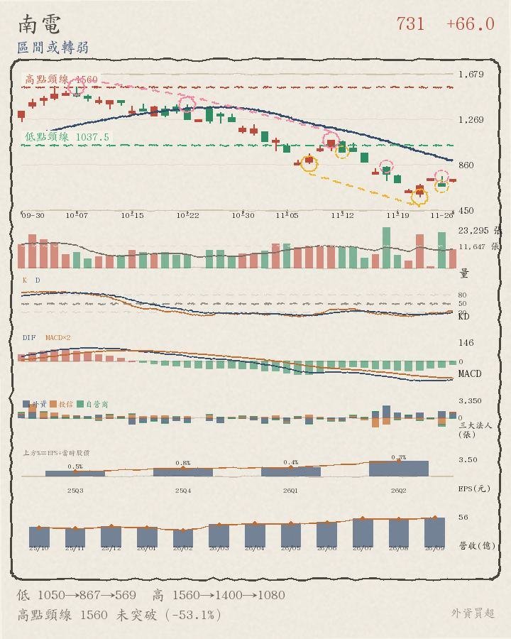
今天收黑、成交量也比平均少、跌破月線 1099.55，跌破前一個轉折低點（高點頸線 1560 還在收盤上方），轉折還沒走出明顯方向。
- 月線位置：收盤 792 在月線 1099.55 之下；5 日線 940.2 也在月線之下（短均在下）；月線走平或向下、5 日線走平或向下
- 量能：成交量是 20 日均量的 0.79 倍，比 20 日均量少很多
- 關鍵價位：高點頸線 1560 還沒突破、還在收盤上方 49.2%；最近轉折高點 1080（低於 26.7%）；最近轉折低點 867（低於 8.7%）
- 轉折結構：低點 1025、1050、867 與高點 1560、1400、1080 都沒有明顯遞增，屬於區間震盪或轉弱；還沒確認的轉折低點 11-12 972、11-17 792；還沒確認的轉折高點 11-02 1220（圖上虛線小圈）
區間或轉弱 成交金額 63.07 億・全榜第 36 名（上市第 30 名）
好條件 4/4：跌破前低、在月線之下、月線下彎、外資買超
不好條件 0/5：無

今天收黑、跌破月線 1741.75，跌破前一個轉折低點（高點頸線 2335 還在收盤上方），轉折還沒走出明顯方向。
- 月線位置：收盤 1450 在月線 1741.75 之下；5 日線 1570 也在月線之下（短均在下）；月線走平或向下、5 日線走平或向下
- 量能：成交量是 20 日均量的 1.00 倍，跟 20 日均量差不多
- 關鍵價位：高點頸線 2335 還沒突破、還在收盤上方 37.9%；最近轉折高點 1990（低於 27.1%）；最近轉折低點 1485（低於 2.4%）
- 轉折結構：低點 2080、1795、1485 與高點 2335、2020、1990 都沒有明顯遞增，屬於區間震盪或轉弱；還沒確認的轉折低點 11-12 1550、11-17 1425；還沒確認的轉折高點 11-10 1730、11-12 1715（圖上虛線小圈）
區間或轉弱 成交金額 60.14 億・全榜第 38 名（上市第 31 名）
好條件 3/4：在月線之下、月線下彎、外資買超
不好條件 0/5：無
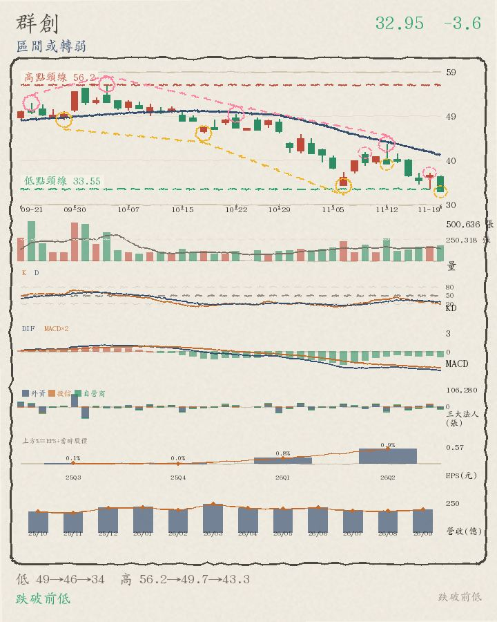
今天帶量收黑、跌破月線 42.13，離高點頸線 56.2 還差 37.2%，轉折還沒走出明顯方向。
- 月線位置：收盤 35.3 在月線 42.13 之下；5 日線 38.2 也在月線之下（短均在下）；月線走平或向下、5 日線走平或向下
- 量能：成交量是 20 日均量的 1.22 倍，比 20 日均量大不少；收黑卻量增，量價背離
- 關鍵價位：高點頸線 56.2 還沒突破，差 37.2%；最近轉折高點 43.3（低於 18.5%）；最近轉折低點 34.2（高於 3.2%）
- 轉折結構：低點 48.55、45.65、34.2 與高點 56.2、49.7、43.3 都沒有明顯遞增，屬於區間震盪或轉弱；還沒確認的轉折低點 11-12 38.85、11-17 34.5；還沒確認的轉折高點 11-02 45.35、11-10 41.4（圖上虛線小圈）
區間或轉弱 成交金額 59.93 億・全榜第 39 名（上市第 32 名）
好條件 4/4：跌破前低、在月線之下、月線下彎、外資買超
不好條件 0/5：無
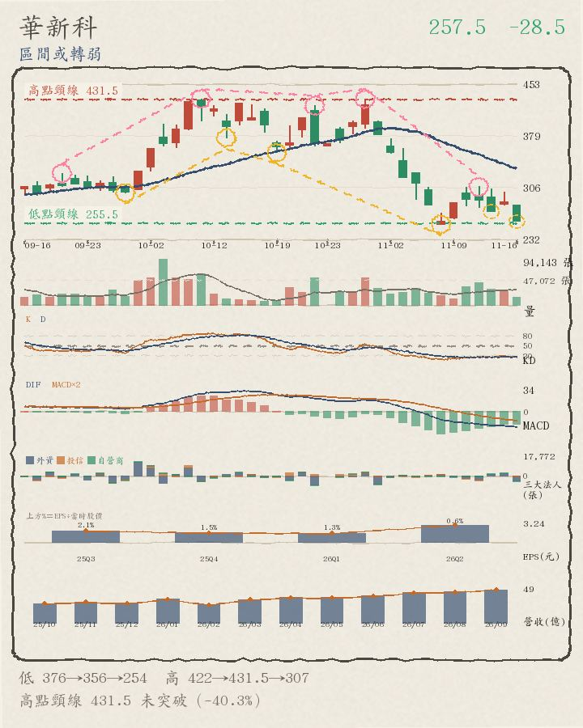
今天收黑、成交量也比平均少、跌破月線 326.075，跌破前一個轉折低點（高點頸線 431.5 還在收盤上方），轉折還沒走出明顯方向。
- 月線位置：收盤 232 在月線 326.075 之下；5 日線 267.1 也在月線之下（短均在下）；月線走平或向下、5 日線走平或向下
- 量能：成交量是 20 日均量的 0.86 倍，比 20 日均量少一些
- 關鍵價位：高點頸線 431.5 還沒突破、還在收盤上方 46.2%；最近轉折高點 307（低於 24.4%）；最近轉折低點 253.5（低於 8.5%）
- 轉折結構：低點 376.5、355.5、253.5 與高點 422、431.5、307 都沒有明顯遞增，屬於區間震盪或轉弱；還沒確認的轉折低點 11-12 272、11-17 232（圖上虛線小圈）
區間或轉弱 成交金額 58.24 億・全榜第 41 名（上市第 33 名）
好條件 4/4：跌破前低、在月線之下、月線下彎、外資買超
不好條件 0/5：無
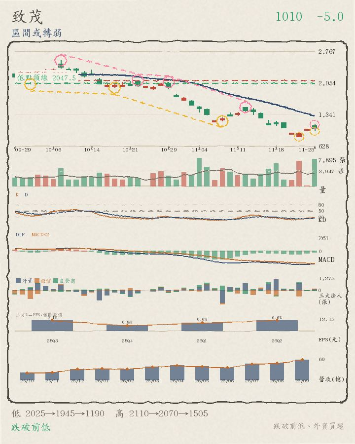
今天帶量收黑、跌破月線 1603.75，跌破前一個轉折低點（高點頸線 2110 還在收盤上方），轉折還沒走出明顯方向。
- 月線位置：收盤 1135 在月線 1603.75 之下；5 日線 1317 也在月線之下（短均在下）；月線走平或向下、5 日線向上
- 量能：成交量是 20 日均量的 1.49 倍，比 20 日均量大不少；收黑卻量增，量價背離
- 關鍵價位：高點頸線 2110 還沒突破、還在收盤上方 46.2%；最近轉折高點 1505（低於 24.6%）；最近轉折低點 1190（低於 4.6%）
- 轉折結構：低點 2025、1945、1190 與高點 2110、2070、1505 都沒有明顯遞增，屬於區間震盪或轉弱；還沒確認的轉折低點 11-17 1135（圖上虛線小圈）
區間或轉弱 成交金額 57 億・全榜第 42 名（上市第 34 名）
好條件 3/4：在月線之下、月線下彎、外資買超
不好條件 0/5：無
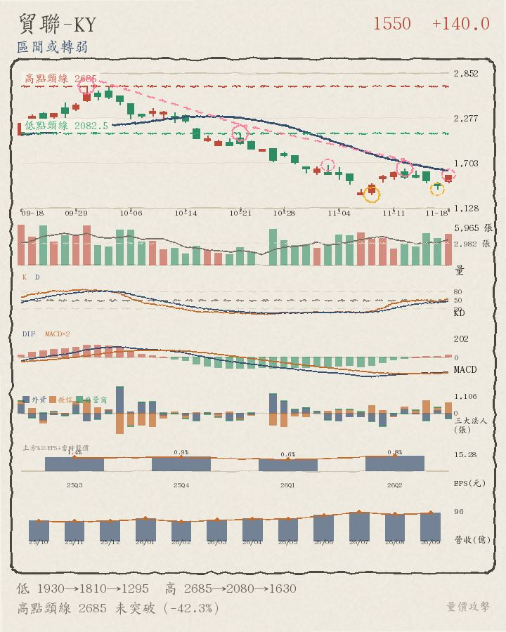
今天帶量收黑、跌破月線 1625.5，離高點頸線 2685 還差 47.5%，轉折還沒走出明顯方向。
- 月線位置：收盤 1410 在月線 1625.5 之下；5 日線 1499 也在月線之下（短均在下）；月線走平或向下、5 日線向上
- 量能：成交量是 20 日均量的 1.25 倍，比 20 日均量大不少；收黑卻量增，量價背離
- 關鍵價位：高點頸線 2685 還沒突破，差 47.5%；最近轉折高點 1630（低於 13.5%）；最近轉折低點 1295（高於 8.9%）
- 轉折結構：低點 1930、1810、1295 與高點 2685、2080、1630 都沒有明顯遞增，屬於區間震盪或轉弱；還沒確認的轉折低點 11-02 1555、11-17 1365；還沒確認的轉折高點 11-03 1675（圖上虛線小圈）
區間或轉弱 成交金額 56.55 億・全榜第 43 名（上市第 35 名）
好條件 3/4：在月線之下、月線下彎、外資買超
不好條件 0/5：無
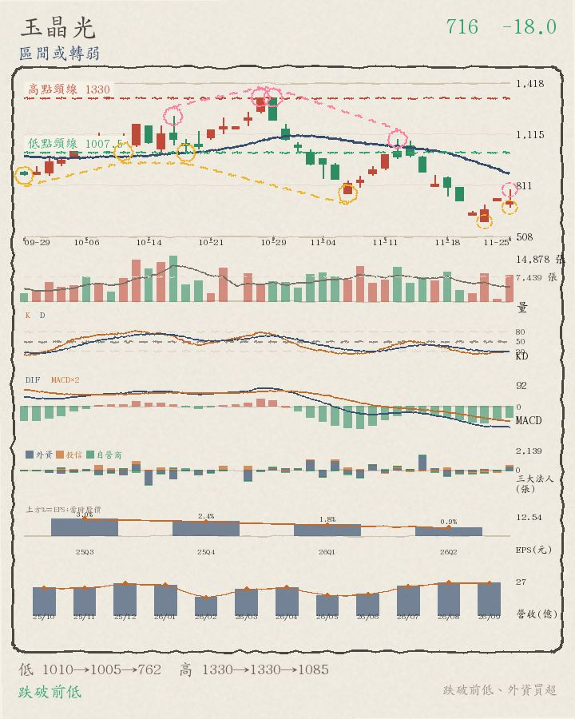
今天收黑、成交量也比平均少、跌破月線 1016.15，離高點頸線 1330 還差 38.3%，轉折還沒走出明顯方向。
- 月線位置：收盤 820 在月線 1016.15 之下；5 日線 934.2 也在月線之下（短均在下）；月線走平或向下、5 日線向上
- 量能：成交量是 20 日均量的 0.93 倍，比 20 日均量少一些
- 關鍵價位：高點頸線 1330 還沒突破，差 38.3%；最近轉折高點 1085（低於 24.4%）；最近轉折低點 762（高於 7.6%）
- 轉折結構：低點 1010、1005、762 與高點 1330、1330、1085 都沒有明顯遞增，屬於區間震盪或轉弱；還沒確認的轉折低點 11-17 806（圖上虛線小圈）
區間或轉弱 成交金額 55.83 億・全榜第 45 名（上市第 36 名）
好條件 2/4：在月線之下、月線下彎
不好條件 1/5：外資賣超
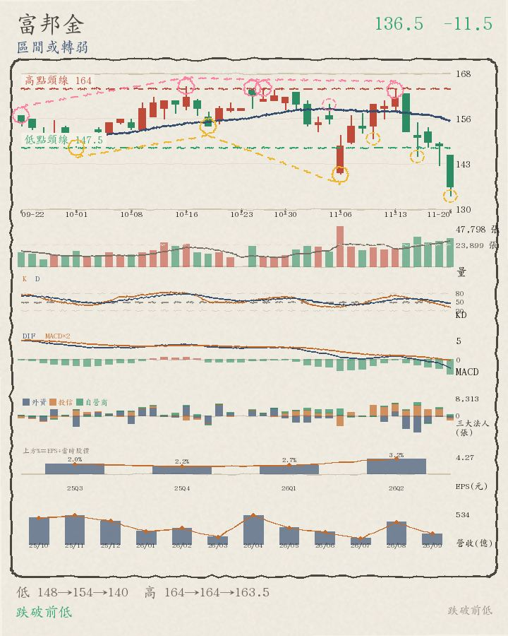
今天帶量收黑、跌破月線 156.8，離高點頸線 164.5 還差 8.5%，轉折還沒走出明顯方向。
- 月線位置：收盤 150.5 在月線 156.8 之下；5 日線 156.5 也在月線之下（短均在下）；月線走平或向下、5 日線向上
- 量能：成交量是 20 日均量的 1.75 倍，比 20 日均量大不少；收黑卻量增，量價背離
- 關鍵價位：高點頸線 164.5 還沒突破，差 8.5%；最近轉折高點 164（低於 8.2%）；最近轉折低點 140（高於 7.5%）
- 轉折結構：低點 147.5、153.5、140 與高點 164.5、164、164 都沒有明顯遞增，屬於區間震盪或轉弱；還沒確認的轉折低點 11-11 150、11-17 145；還沒確認的轉折高點 11-05 159.5、11-13 163.5（圖上虛線小圈）
區間或轉弱 成交金額 49.55 億・全榜第 47 名（上市第 37 名）
好條件 1/4：外資買超
不好條件 2/5：站上月線、月線向上
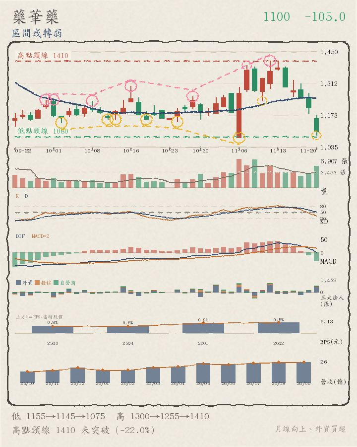
今天帶量收黑、站上月線 1244.75，離高點頸線 1410 還差 9.2%，轉折還沒走出明顯方向。
- 月線位置：收盤 1280 在月線 1244.75 之上；5 日線 1331 也在月線之上（短均在上）；月線向上、5 日線向上
- 量能：成交量是 20 日均量的 1.23 倍，比 20 日均量大不少；收黑卻量增，量價背離
- 關鍵價位：高點頸線 1410 還沒突破，差 9.2%；最近轉折高點 1410（低於 9.2%）；最近轉折低點 1075（高於 19.1%）
- 轉折結構：低點 1155、1145、1075 與高點 1300、1255、1410 都沒有明顯遞增，屬於區間震盪或轉弱；還沒確認的轉折低點 11-11 1235、11-17 1255；還沒確認的轉折高點 11-09 1390（圖上虛線小圈）
區間或轉弱 成交金額 48.24 億・全榜第 48 名（上市第 38 名）
好條件 2/4：月線下彎、外資買超
不好條件 2/5：站上月線、量價攻擊（收紅＋大量）
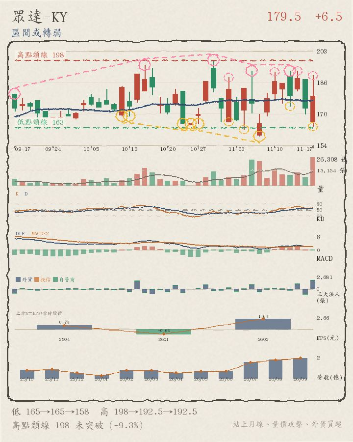
今天帶量收紅、站上月線 177.025，離高點頸線 198 還差 9.3%，轉折還沒走出明顯方向。
- 月線位置：收盤 179.5 在月線 177.025 之上；5 日線 181.3 也在月線之上（短均在上）；月線走平或向下、5 日線向上
- 量能：成交量是 20 日均量的 2.92 倍，比 20 日均量大不少；收紅又量增，量價配合
- 關鍵價位：高點頸線 198 還沒突破，差 9.3%；最近轉折高點 192.5（低於 6.8%）；最近轉折低點 158.5（高於 13.2%）
- 轉折結構：低點 165、165、158.5 與高點 198、192.5、192.5 都沒有明顯遞增，屬於區間震盪或轉弱；還沒確認的轉折低點 11-12 174、11-17 163.5；還沒確認的轉折高點 11-13 192.5、11-17 190（圖上虛線小圈）
剛突破前高 成交金額 47.79 億・全榜第 49 名（上市第 39 名）
好條件 0/4：無
不好條件 5/5：站上月線、月線向上、突破頸線、量價攻擊（收紅＋大量）、外資賣超

今天帶量收紅、站上月線 74.995，已站上高點頸線 76.9，高點還在墊高（但底部沒同步墊高）。
- 月線位置：收盤 77.5 在月線 74.995 之上；5 日線 76.62 也在月線之上（短均在上）；月線向上、5 日線向上
- 量能：成交量是 20 日均量的 1.39 倍，比 20 日均量大不少；收紅又量增，量價配合
- 關鍵價位：高點頸線 76.9 已站上；最近轉折高點 76.2（高於 1.7%）；最近轉折低點 67.5（高於 14.8%）
- 轉折結構：高點 76.9、76.4、76.2 墊高 5.8%（頭頭高），但低點 67.3、73.8、67.5 沒有同步墊高；還沒確認的轉折低點 11-11 72.6、11-17 75.1；還沒確認的轉折高點 11-05 75、11-16 80.6（圖上虛線小圈）
區間或轉弱 成交金額 47.31 億・全榜第 50 名（上市第 40 名）
好條件 4/4：跌破前低、在月線之下、月線下彎、外資買超
不好條件 0/5：無

今天收黑、跌破月線 615.775，跌破前一個轉折低點（高點頸線 888 還在收盤上方），轉折還沒走出明顯方向。
- 月線位置：收盤 415 在月線 615.775 之下；5 日線 490.8 也在月線之下（短均在下）；月線走平或向下、5 日線走平或向下
- 量能：成交量是 20 日均量的 0.99 倍，跟 20 日均量差不多
- 關鍵價位：高點頸線 888 還沒突破、還在收盤上方 53.3%；最近轉折高點 571（低於 27.3%）；最近轉折低點 475.5（低於 12.7%）
- 轉折結構：低點 726、704、475.5 與高點 888、859、571 都沒有明顯遞增，屬於區間震盪或轉弱；還沒確認的轉折低點 11-04 526、11-17 415（圖上虛線小圈）
區間或轉弱 成交金額 47.28 億・全榜第 51 名（上市第 41 名）
好條件 2/4：在月線之下、月線下彎
不好條件 2/5：量價攻擊（收紅＋大量）、外資賣超

今天帶量收紅、跌破月線 112.625，離高點頸線 118 還差 5.9%，轉折還沒走出明顯方向。
- 月線位置：收盤 111 在月線 112.625 之下；5 日線 112.1 也在月線之下（短均在下）；月線走平或向下、5 日線向上
- 量能：成交量是 20 日均量的 1.62 倍，比 20 日均量大不少；收紅又量增，量價配合
- 關鍵價位：高點頸線 118 還沒突破，差 5.9%；最近轉折高點 117.5（低於 5.5%）；最近轉折低點 101（高於 9.9%）
- 轉折結構：低點 110、110、101 與高點 118、117.5、117.5 都沒有明顯遞增，屬於區間震盪或轉弱；還沒確認的轉折低點 11-11 107、11-17 106；還沒確認的轉折高點 11-09 113.5、11-16 115.5（圖上虛線小圈）
剛突破前高 成交金額 46.8 億・全榜第 52 名（上市第 42 名）
好條件 0/4：無
不好條件 4/5：站上月線、月線向上、突破頸線、外資賣超
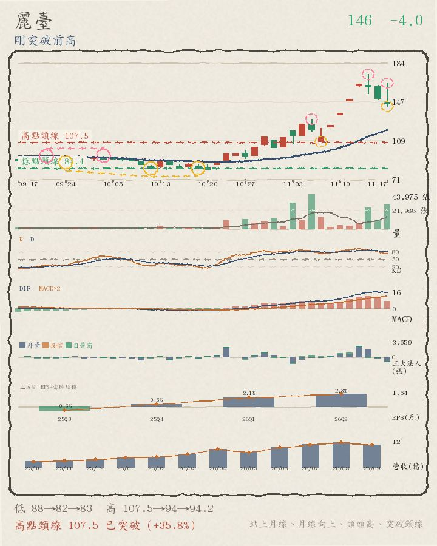
今天帶量收黑、站上月線 119.48，已站上高點頸線 107.5，高點還在墊高（但底部沒同步墊高）。
- 月線位置：收盤 146 在月線 119.48 之上；5 日線 154.3 也在月線之上（短均在上）；月線向上、5 日線向上
- 量能：成交量是 20 日均量的 2.74 倍，比 20 日均量大不少；收黑卻量增，量價背離
- 關鍵價位：高點頸線 107.5 已站上；最近轉折高點 94.2（高於 55.0%）；最近轉折低點 82.6（高於 76.8%）
- 轉折結構：高點 107.5、94、94.2 墊高 84.2%（頭頭高），但低點 87.8、82.2、82.6 沒有同步墊高；還沒確認的轉折低點 11-06 108、11-17 142.5；還沒確認的轉折高點 11-13 173.5、11-17 165（圖上虛線小圈）
區間或轉弱 成交金額 46.52 億・全榜第 53 名（上市第 43 名）
好條件 2/4：在月線之下、月線下彎
不好條件 1/5：外資賣超

今天收黑、成交量也比平均少、跌破月線 61.33，離高點頸線 78.1 還差 34.1%，轉折還沒走出明顯方向。
- 月線位置：收盤 51.5 在月線 61.33 之下；5 日線 55.36 也在月線之下（短均在下）；月線走平或向下、5 日線走平或向下
- 量能：成交量是 20 日均量的 0.85 倍，比 20 日均量少一些
- 關鍵價位：高點頸線 78.1 還沒突破，差 34.1%；最近轉折高點 63（低於 18.3%）；最近轉折低點 49.35（高於 4.4%）
- 轉折結構：低點 70.5、63、49.35 與高點 78.1、73、63 都沒有明顯遞增，屬於區間震盪或轉弱；還沒確認的轉折低點 11-11 55.9、11-17 50.2；還沒確認的轉折高點 11-12 60.4（圖上虛線小圈）
區間或轉弱 成交金額 43.56 億・全榜第 55 名（上市第 44 名）
好條件 2/4：在月線之下、月線下彎
不好條件 1/5：外資賣超

今天帶量收黑、跌破月線 235.975，離高點頸線 304.5 還差 32.0%，轉折還沒走出明顯方向。
- 月線位置：收盤 207 在月線 235.975 之下；5 日線 223.7 也在月線之下（短均在下）；月線走平或向下、5 日線向上
- 量能：成交量是 20 日均量的 1.08 倍，比 20 日均量大一些；收黑卻量增，量價背離
- 關鍵價位：高點頸線 304.5 還沒突破，差 32.0%；最近轉折高點 243.5（低於 15.0%）；最近轉折低點 190.5（高於 8.7%）
- 轉折結構：低點 278、254、190.5 與高點 299.5、304.5、243.5 都沒有明顯遞增，屬於區間震盪或轉弱；還沒確認的轉折低點 11-12 227.5、11-17 202；還沒確認的轉折高點 11-02 247、11-10 239（圖上虛線小圈）
區間或轉弱 成交金額 40.4 億・全榜第 56 名（上市第 45 名）
好條件 3/4：在月線之下、月線下彎、外資買超
不好條件 0/5：無
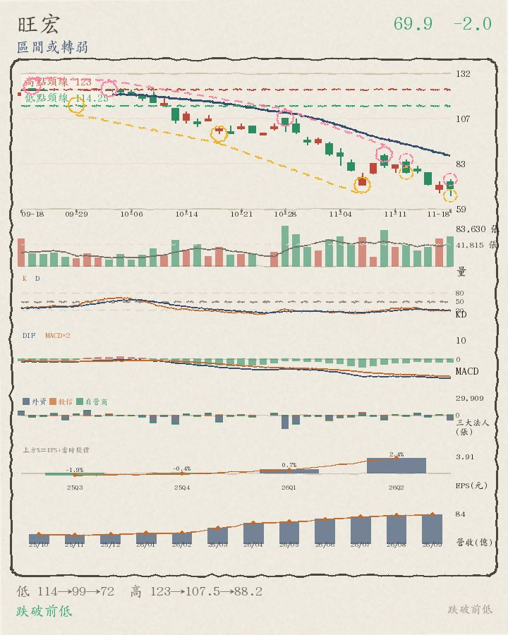
今天帶量收黑、跌破月線 89.055，離高點頸線 123 還差 41.5%，轉折還沒走出明顯方向。
- 月線位置：收盤 71.9 在月線 89.055 之下；5 日線 76.92 也在月線之下（短均在下）；月線走平或向下、5 日線走平或向下
- 量能：成交量是 20 日均量的 1.31 倍，比 20 日均量大不少；收黑卻量增，量價背離
- 關鍵價位：高點頸線 123 還沒突破，差 41.5%；最近轉折高點 88.2（低於 18.5%）；最近轉折低點 71.8（高於 0.1%）
- 轉折結構：低點 114.5、99.2、71.8 與高點 123、107.5、88.2 都沒有明顯遞增，屬於區間震盪或轉弱；還沒確認的轉折低點 11-12 78.2、11-17 67.7；還沒確認的轉折高點 11-12 85.2（圖上虛線小圈）
區間或轉弱 成交金額 40.26 億・全榜第 57 名（上市第 46 名）
好條件 4/4：跌破前低、在月線之下、月線下彎、外資買超
不好條件 0/5：無
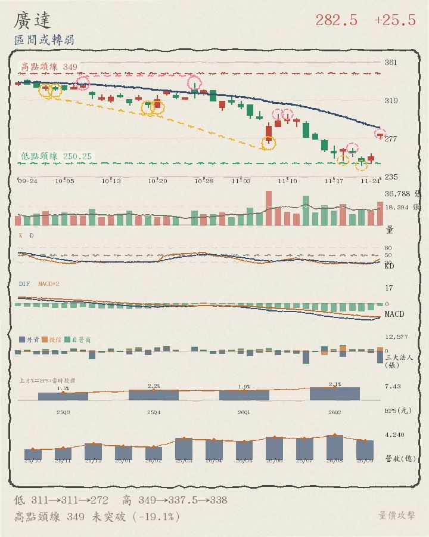
今天收黑、跌破月線 304.2，跌破前一個轉折低點（高點頸線 349 還在收盤上方），轉折還沒走出明顯方向。
- 月線位置：收盤 262.5 在月線 304.2 之下；5 日線 276 也在月線之下（短均在下）；月線走平或向下、5 日線走平或向下
- 量能：成交量是 20 日均量的 1.02 倍，跟 20 日均量差不多
- 關鍵價位：高點頸線 349 還沒突破、還在收盤上方 24.8%；最近轉折高點 338（低於 22.3%）；最近轉折低點 272（低於 3.5%）
- 轉折結構：低點 311、311、272 與高點 349、337.5、338 都沒有明顯遞增，屬於區間震盪或轉弱；還沒確認的轉折低點 11-17 255；還沒確認的轉折高點 11-09 304、11-10 304（圖上虛線小圈）
區間或轉弱 成交金額 40.08 億・全榜第 58 名（上市第 47 名）
好條件 3/4：在月線之下、月線下彎、外資買超
不好條件 0/5：無
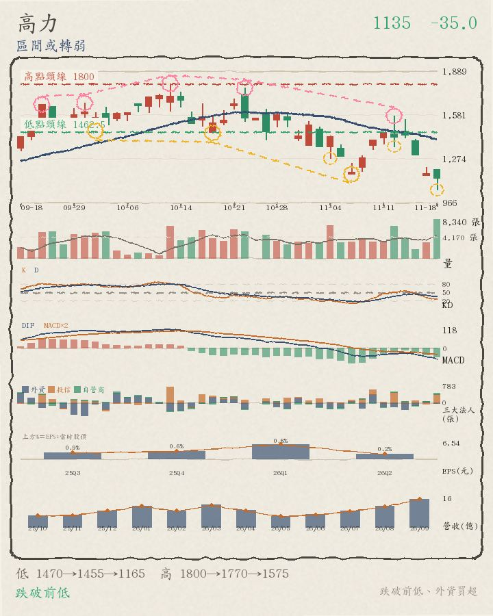
今天收黑、成交量也比平均少、跌破月線 1430.25，離高點頸線 1800 還差 35.0%，轉折還沒走出明顯方向。
- 月線位置：收盤 1170 在月線 1430.25 之下；5 日線 1359 也在月線之下（短均在下）；月線走平或向下、5 日線向上
- 量能：成交量是 20 日均量的 0.83 倍，比 20 日均量少很多
- 關鍵價位：高點頸線 1800 還沒突破，差 35.0%；最近轉折高點 1575（低於 25.7%）；最近轉折低點 1165（高於 0.4%）
- 轉折結構：低點 1470、1455、1165 與高點 1800、1770、1575 都沒有明顯遞增，屬於區間震盪或轉弱；還沒確認的轉折低點 11-12 1360、11-17 1170；還沒確認的轉折高點 11-02 1535（圖上虛線小圈）
區間或轉弱 成交金額 38.69 億・全榜第 59 名（上市第 48 名）
好條件 3/4：在月線之下、月線下彎、外資買超
不好條件 0/5：無

今天帶量收黑、跌破月線 907.5，離高點頸線 1005 還差 17.8%，轉折還沒走出明顯方向。
- 月線位置：收盤 826 在月線 907.5 之下；5 日線 867.2 也在月線之下（短均在下）；月線走平或向下、5 日線走平或向下
- 量能：成交量是 20 日均量的 1.57 倍，比 20 日均量大不少；收黑卻量增，量價背離
- 關鍵價位：高點頸線 1005 還沒突破，差 17.8%；最近轉折高點 915（低於 9.7%）；最近轉折低點 790（高於 4.6%）
- 轉折結構：低點 946、946、790 與高點 1005、1005、915 都沒有明顯遞增，屬於區間震盪或轉弱；還沒確認的轉折低點 11-17 810；還沒確認的轉折高點 11-02 925、11-13 915（圖上虛線小圈）
剛突破前高 成交金額 36.37 億・全榜第 62 名（上市第 49 名）
好條件 2/4：在月線之下、月線下彎
不好條件 1/5：外資賣超

今天帶量收黑、跌破月線 507.475，離高點頸線 604 還差 27.5%，高點還在墊高（但底部沒同步墊高）。
- 月線位置：收盤 438 在月線 507.475 之下；5 日線 501 也在月線之下（短均在下）；月線走平或向下、5 日線向上
- 量能：成交量是 20 日均量的 1.47 倍，比 20 日均量大不少；收黑卻量增，量價背離
- 關鍵價位：高點頸線 604 還沒突破，差 27.5%；最近轉折高點 563（低於 22.2%）；最近轉折低點 395（高於 10.9%）
- 轉折結構：高點 604、597、563 墊高 3.4%（頭頭高），但低點 554、554、395 沒有同步墊高；還沒確認的轉折低點 11-17 436.5；還沒確認的轉折高點 11-02 539、11-13 582（圖上虛線小圈）
高點墊高、底部不穩 成交金額 35.87 億・全榜第 63 名（上市第 50 名）
好條件 0/4：無
不好條件 4/5：站上月線、月線向上、量價攻擊（收紅＋大量）、外資賣超

今天帶量收紅、站上月線 159.825，離高點頸線 166.5 還差 1.2%，高點還在墊高（但底部沒同步墊高）。
- 月線位置：收盤 164.5 在月線 159.825 之上；5 日線 163.2 也在月線之上（短均在上）；月線向上、5 日線向上
- 量能：成交量是 20 日均量的 1.56 倍，比 20 日均量大不少；收紅又量增，量價配合
- 關鍵價位：高點頸線 166.5 還沒突破，差 1.2%；最近轉折高點 166.5（低於 1.2%）；最近轉折低點 156.5（高於 5.1%）
- 轉折結構：高點 146、147、166.5 墊高 14.0%（頭頭高），但低點 156.5、156.5、156.5 沒有同步墊高；還沒確認的轉折低點 11-03 157.5、11-17 162；還沒確認的轉折高點 11-02 161.5、11-16 168（圖上虛線小圈）
區間或轉弱 成交金額 184.5 億・全榜第 9 名（上櫃第 1 名）
好條件 1/4：在月線之下
不好條件 2/5：月線向上、外資賣超

今天帶量收黑、跌破月線 508.4，離高點頸線 630 還差 23.7%，轉折還沒走出明顯方向。
- 月線位置：收盤 481 在月線 508.4 之下；5 日線 519.8 也在月線之上（短均在上）；月線向上、5 日線向上
- 量能：成交量是 20 日均量的 1.42 倍，比 20 日均量大不少；收黑卻量增，量價背離
- 關鍵價位：高點頸線 630 還沒突破，差 23.7%；最近轉折高點 573（低於 16.1%）；最近轉折低點 403.5（高於 19.2%）
- 轉折結構：低點 454、479、403.5 與高點 630、596、573 都沒有明顯遞增，屬於區間震盪或轉弱；還沒確認的轉折低點 11-17 461.5；還沒確認的轉折高點 11-16 572（圖上虛線小圈）
區間或轉弱 成交金額 112.42 億・全榜第 17 名（上櫃第 2 名）
好條件 2/4：在月線之下、月線下彎
不好條件 1/5：外資賣超

今天收黑、成交量也比平均少、跌破月線 134.35，離高點頸線 150.5 還差 21.6%，轉折還沒走出明顯方向。
- 月線位置：收盤 118 在月線 134.35 之下；5 日線 133.7 也在月線之下（短均在下）；月線走平或向下、5 日線向上
- 量能：成交量是 20 日均量的 0.72 倍，比 20 日均量少很多
- 關鍵價位：高點頸線 150.5 還沒突破，差 21.6%；最近轉折高點 150.5（低於 21.6%）；最近轉折低點 109.5（高於 7.8%）
- 轉折結構：低點 113、124、109.5 與高點 149、143.5、150.5 都沒有明顯遞增，屬於區間震盪或轉弱；還沒確認的轉折低點 11-02 122、11-17 118；還沒確認的轉折高點 11-02 139、11-10 140.5（圖上虛線小圈）
區間或轉弱 成交金額 67.59 億・全榜第 29 名（上櫃第 3 名）
好條件 4/4：跌破前低、在月線之下、月線下彎、外資買超
不好條件 0/5：無

今天帶量收黑、跌破月線 13995.8，跌破前一個轉折低點（高點頸線 18465 還在收盤上方），轉折還沒走出明顯方向。
- 月線位置：收盤 9875 在月線 13995.8 之下；5 日線 11437 也在月線之下（短均在下）；月線走平或向下、5 日線走平或向下
- 量能：成交量是 20 日均量的 1.76 倍，比 20 日均量大不少；收黑卻量增，量價背離
- 關鍵價位：高點頸線 18465 還沒突破、還在收盤上方 46.5%；最近轉折高點 13375（低於 26.2%）；最近轉折低點 10710（低於 7.8%）
- 轉折結構：低點 15975、15500、10710 與高點 18465、17490、13375 都沒有明顯遞增，屬於區間震盪或轉弱；還沒確認的轉折低點 11-17 9720；還沒確認的轉折高點 11-09 11990（圖上虛線小圈）
區間或轉弱 成交金額 66.76 億・全榜第 30 名（上櫃第 4 名）
好條件 4/4：跌破前低、在月線之下、月線下彎、外資買超
不好條件 0/5：無

今天收黑、成交量也比平均少、跌破月線 1156.35，跌破前一個轉折低點（高點頸線 1835 還在收盤上方），轉折還沒走出明顯方向。
- 月線位置：收盤 790 在月線 1156.35 之下；5 日線 931.4 也在月線之下（短均在下）；月線走平或向下、5 日線走平或向下
- 量能：成交量是 20 日均量的 0.69 倍，比 20 日均量少很多
- 關鍵價位：高點頸線 1835 還沒突破、還在收盤上方 56.9%；最近轉折高點 1080（低於 26.9%）；最近轉折低點 897（低於 11.9%）
- 轉折結構：低點 1295、1275、897 與高點 1835、1450、1080 都沒有明顯遞增，屬於區間震盪或轉弱；還沒確認的轉折低點 11-12 954、11-17 790（圖上虛線小圈）
區間或轉弱 成交金額 64.11 億・全榜第 32 名（上櫃第 5 名）
好條件 3/4：在月線之下、月線下彎、外資買超
不好條件 1/5：量價攻擊（收紅＋大量）
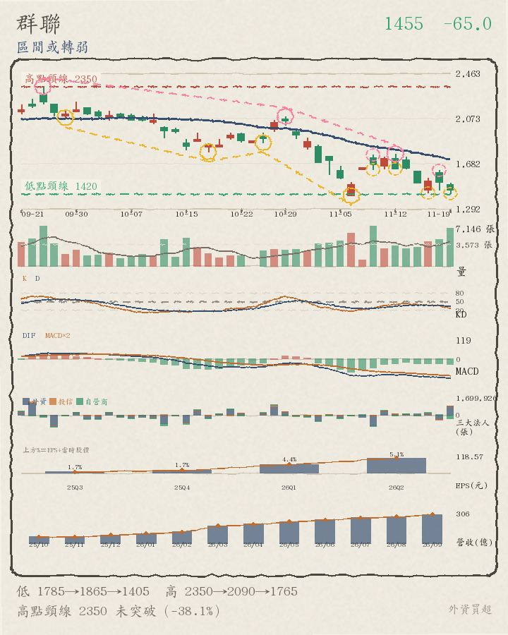
今天帶量收紅、跌破月線 1759，離高點頸線 2350 還差 34.7%，轉折還沒走出明顯方向。
- 月線位置：收盤 1535 在月線 1759 之下；5 日線 1611 也在月線之下（短均在下）；月線走平或向下、5 日線走平或向下
- 量能：成交量是 20 日均量的 1.38 倍，比 20 日均量大不少；收紅又量增，量價配合
- 關鍵價位：高點頸線 2350 還沒突破，差 34.7%；最近轉折高點 1765（低於 13.0%）；最近轉折低點 1405（高於 9.3%）
- 轉折結構：低點 1785、1865、1405 與高點 2350、2090、1765 都沒有明顯遞增，屬於區間震盪或轉弱；還沒確認的轉折低點 11-12 1635、11-17 1430；還沒確認的轉折高點 11-10 1760（圖上虛線小圈）
區間或轉弱 成交金額 63.49 億・全榜第 34 名（上櫃第 6 名）
好條件 3/4：在月線之下、月線下彎、外資買超
不好條件 0/5：無

今天帶量收黑、跌破月線 2214.75，離高點頸線 3210 還差 46.7%，轉折還沒走出明顯方向。
- 月線位置：收盤 1710 在月線 2214.75 之下；5 日線 2007 也在月線之下（短均在下）；月線走平或向下、5 日線向上
- 量能：成交量是 20 日均量的 1.21 倍，比 20 日均量大不少；收黑卻量增，量價背離
- 關鍵價位：高點頸線 3210 還沒突破，差 46.7%；最近轉折高點 2320（低於 26.3%）；最近轉折低點 1705（高於 0.3%）
- 轉折結構：低點 2585、2365、1705 與高點 3210、2795、2320 都沒有明顯遞增，屬於區間震盪或轉弱；還沒確認的轉折低點 11-17 1710；還沒確認的轉折高點 11-02 2465（圖上虛線小圈）
區間或轉弱 成交金額 60.85 億・全榜第 37 名（上櫃第 7 名）
好條件 0/4：無
不好條件 4/5：站上月線、月線向上、量價攻擊（收紅＋大量）、外資賣超
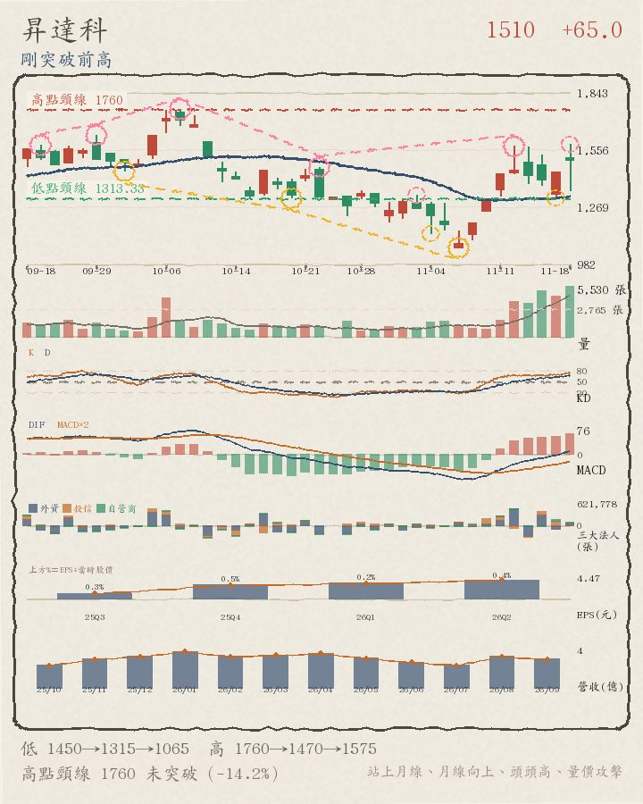
今天帶量收紅、站上月線 1313.75，離高點頸線 1760 還差 17.9%，轉折還沒走出明顯方向。
- 月線位置：收盤 1445 在月線 1313.75 之上；5 日線 1434 也在月線之上（短均在上）；月線向上、5 日線向上
- 量能：成交量是 20 日均量的 2.74 倍，比 20 日均量大不少；收紅又量增，量價配合
- 關鍵價位：高點頸線 1760 還沒突破，差 17.9%；最近轉折高點 1575（低於 8.3%）；最近轉折低點 1065（高於 35.7%）
- 轉折結構：低點 1450、1315、1065 與高點 1760、1470、1575 都沒有明顯遞增，屬於區間震盪或轉弱；還沒確認的轉折低點 11-04 1135、11-17 1315；還沒確認的轉折高點 11-03 1330（圖上虛線小圈）
區間或轉弱 成交金額 59.22 億・全榜第 40 名（上櫃第 8 名）
好條件 2/4：在月線之下、月線下彎
不好條件 1/5：外資賣超
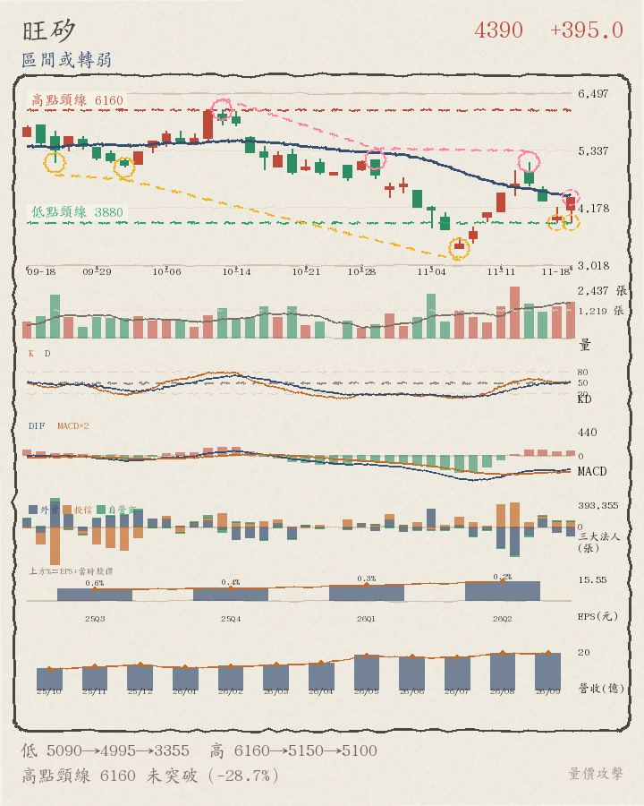
今天帶量收黑、跌破月線 4453.75，離高點頸線 6160 還差 35.1%，轉折還沒走出明顯方向。
- 月線位置：收盤 3995 在月線 4453.75 之下；5 日線 4421 也在月線之下（短均在下）；月線走平或向下、5 日線向上
- 量能：成交量是 20 日均量的 1.41 倍，比 20 日均量大不少；收黑卻量增，量價背離
- 關鍵價位：高點頸線 6160 還沒突破，差 35.1%；最近轉折高點 5150（低於 22.4%）；最近轉折低點 3355（高於 19.1%）
- 轉折結構：低點 5090、4995、3355 與高點 5860、6160、5150 都沒有明顯遞增，屬於區間震盪或轉弱；還沒確認的轉折低點 11-17 3880；還沒確認的轉折高點 11-02 4790、11-13 5100（圖上虛線小圈）
剛突破前高 成交金額 56.36 億・全榜第 44 名（上櫃第 9 名）
好條件 1/4：在月線之下
不好條件 2/5：月線向上、外資賣超

今天收黑、跌破月線 453.25，離高點頸線 530 還差 20.6%，高點還在墊高（但底部沒同步墊高）。
- 月線位置：收盤 421 在月線 453.25 之下；5 日線 469.2 也在月線之上（短均在上）；月線向上、5 日線向上
- 量能：成交量是 20 日均量的 0.96 倍，跟 20 日均量差不多
- 關鍵價位：高點頸線 530 還沒突破，差 20.6%；最近轉折高點 513（低於 17.9%）；最近轉折低點 362.5（高於 16.1%）
- 轉折結構：高點 487、530、513 墊高 1.2%（頭頭高），但低點 436.5、399、362.5 沒有同步墊高；還沒確認的轉折低點 11-04 387、11-17 421；還沒確認的轉折高點 11-13 519（圖上虛線小圈）
區間或轉弱 成交金額 55.54 億・全榜第 46 名（上櫃第 10 名）
好條件 3/4：在月線之下、月線下彎、外資買超
不好條件 0/5：無

今天收黑、成交量也比平均少、跌破月線 696.7，離高點頸線 1260 還差 56.7%，轉折還沒走出明顯方向。
- 月線位置：收盤 546 在月線 696.7 之下；5 日線 602 也在月線之下（短均在下）；月線走平或向下、5 日線向上
- 量能：成交量是 20 日均量的 0.89 倍，比 20 日均量少一些
- 關鍵價位：高點頸線 1260 還沒突破，差 56.7%；最近轉折高點 663（低於 17.6%）；最近轉折低點 508（高於 7.5%）
- 轉折結構：低點 875、872、508 與高點 1010、1260、663 都沒有明顯遞增，屬於區間震盪或轉弱；還沒確認的轉折低點 11-17 535（圖上虛線小圈）
區間或轉弱 成交金額 46.03 億・全榜第 54 名（上櫃第 11 名）
好條件 3/4：在月線之下、月線下彎、外資買超
不好條件 0/5：無

今天帶量收黑、跌破月線 392.025，離高點頸線 578 還差 44.7%，轉折還沒走出明顯方向。
- 月線位置：收盤 319.5 在月線 392.025 之下；5 日線 358.4 也在月線之下（短均在下）；月線走平或向下、5 日線向上
- 量能：成交量是 20 日均量的 1.13 倍，比 20 日均量大一些；收黑卻量增，量價背離
- 關鍵價位：高點頸線 578 還沒突破，差 44.7%；最近轉折高點 413（低於 22.6%）；最近轉折低點 301（高於 6.1%）
- 轉折結構：低點 477、399.5、301 與高點 578、510、413 都沒有明顯遞增，屬於區間震盪或轉弱；還沒確認的轉折低點 11-17 309；還沒確認的轉折高點 11-03 428（圖上虛線小圈）
區間或轉弱 成交金額 38.62 億・全榜第 60 名（上櫃第 12 名）
好條件 4/4：跌破前低、在月線之下、月線下彎、外資買超
不好條件 0/5：無

今天帶量收黑、跌破月線 181.1，跌破前一個轉折低點（高點頸線 223 還在收盤上方），轉折還沒走出明顯方向。
- 月線位置：收盤 141.5 在月線 181.1 之下；5 日線 161.5 也在月線之下（短均在下）；月線走平或向下、5 日線向上
- 量能：成交量是 20 日均量的 1.25 倍，比 20 日均量大不少；收黑卻量增，量價背離
- 關鍵價位：高點頸線 223 還沒突破、還在收盤上方 36.5%；最近轉折高點 180（低於 21.4%）；最近轉折低點 142（低於 0.4%）
- 轉折結構：低點 211、194.5、142 與高點 217、223、180 都沒有明顯遞增，屬於區間震盪或轉弱；還沒確認的轉折低點 11-17 139.5（圖上虛線小圈）
區間或轉弱 成交金額 38.19 億・全榜第 61 名（上櫃第 13 名）
好條件 4/4：跌破前低、在月線之下、月線下彎、外資買超
不好條件 0/5：無
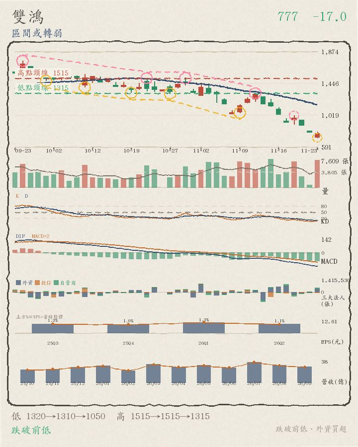
今天收黑、成交量也比平均少、跌破月線 1262.35，跌破前一個轉折低點（高點頸線 1515 還在收盤上方），轉折還沒走出明顯方向。
- 月線位置：收盤 927 在月線 1262.35 之下；5 日線 1113.4 也在月線之下（短均在下）；月線走平或向下、5 日線走平或向下
- 量能：成交量是 20 日均量的 0.89 倍，比 20 日均量少一些
- 關鍵價位：高點頸線 1515 還沒突破、還在收盤上方 38.8%；最近轉折高點 1315（低於 29.5%）；最近轉折低點 1050（低於 11.7%）
- 轉折結構：低點 1320、1310、1050 與高點 1515、1515、1315 都沒有明顯遞增，屬於區間震盪或轉弱；還沒確認的轉折低點 11-02 1280、11-17 927；還沒確認的轉折高點 11-03 1445（圖上虛線小圈）
區間或轉弱 成交金額 34.04 億・全榜第 64 名（上櫃第 14 名）
好條件 2/4：在月線之下、月線下彎
不好條件 2/5：量價攻擊（收紅＋大量）、外資賣超
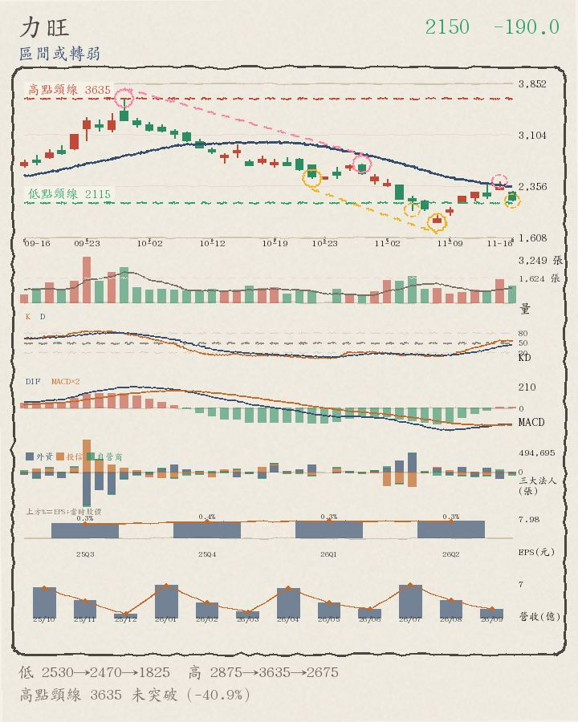
今天帶量收紅、跌破月線 2320.5，離高點頸線 3635 還差 40.0%，轉折還沒走出明顯方向。
- 月線位置：收盤 2180 在月線 2320.5 之下；5 日線 2228 也在月線之下（短均在下）；月線走平或向下、5 日線向上
- 量能：成交量是 20 日均量的 1.61 倍，比 20 日均量大不少；收紅又量增，量價配合
- 關鍵價位：高點頸線 3635 還沒突破，差 40.0%；最近轉折高點 2675（低於 18.5%）；最近轉折低點 1825（高於 19.5%）
- 轉折結構：低點 2530、2470、1825 與高點 2875、3635、2675 都沒有明顯遞增，屬於區間震盪或轉弱；還沒確認的轉折低點 11-04 2005、11-17 2080；還沒確認的轉折高點 11-13 2425、11-17 2315（圖上虛線小圈）
區間或轉弱 成交金額 26.25 億・全榜第 65 名（上櫃第 15 名）
好條件 4/4：跌破前低、在月線之下、月線下彎、外資買超
不好條件 0/5：無
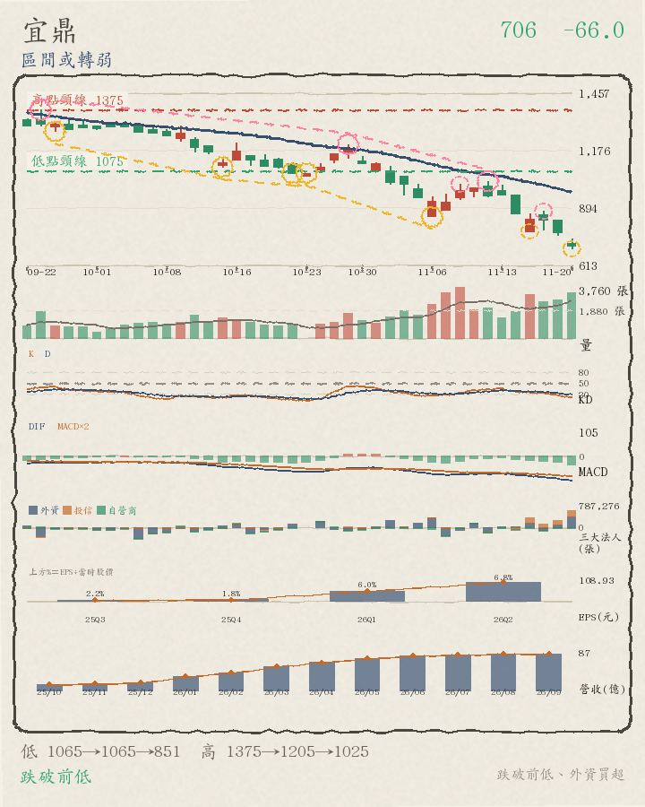
今天帶量收黑、跌破月線 1020.2，跌破前一個轉折低點（高點頸線 1375 還在收盤上方），轉折還沒走出明顯方向。
- 月線位置：收盤 838 在月線 1020.2 之下；5 日線 921.6 也在月線之下（短均在下）；月線走平或向下、5 日線走平或向下
- 量能：成交量是 20 日均量的 1.89 倍，比 20 日均量大不少；收黑卻量增，量價背離
- 關鍵價位：高點頸線 1375 還沒突破、還在收盤上方 39.1%；最近轉折高點 1025（低於 18.2%）；最近轉折低點 851（低於 1.5%）
- 轉折結構：低點 1065、1065、851 與高點 1375、1205、1025 都沒有明顯遞增，屬於區間震盪或轉弱；還沒確認的轉折低點 11-17 780；還沒確認的轉折高點 11-10 1010（圖上虛線小圈）
剛突破前高 成交金額 25.57 億・全榜第 66 名（上櫃第 16 名）
好條件 3/4：在月線之下、月線下彎、外資買超
不好條件 0/5：無

今天帶量收黑、跌破月線 2897.75，離高點頸線 3775 還差 27.7%，高點還在墊高（但底部沒同步墊高）。
- 月線位置：收盤 2730 在月線 2897.75 之下；5 日線 3065 也在月線之上（短均在上）；月線走平或向下、5 日線向上
- 量能：成交量是 20 日均量的 1.19 倍，比 20 日均量大不少；收黑卻量增，量價背離
- 關鍵價位：高點頸線 3775 還沒突破，差 27.7%；最近轉折高點 3345（低於 18.4%）；最近轉折低點 2250（高於 21.3%）
- 轉折結構：高點 3775、3580、3345 墊高 4.8%（頭頭高），但低點 3000、2825、2250 沒有同步墊高；還沒確認的轉折低點 11-17 2705；還沒確認的轉折高點 11-02 2980、11-13 3505（圖上虛線小圈）
底部墊高、未過前高 成交金額 24.55 億・全榜第 67 名（上櫃第 17 名）
好條件 1/4：外資買超
不好條件 2/5：站上月線、月線向上
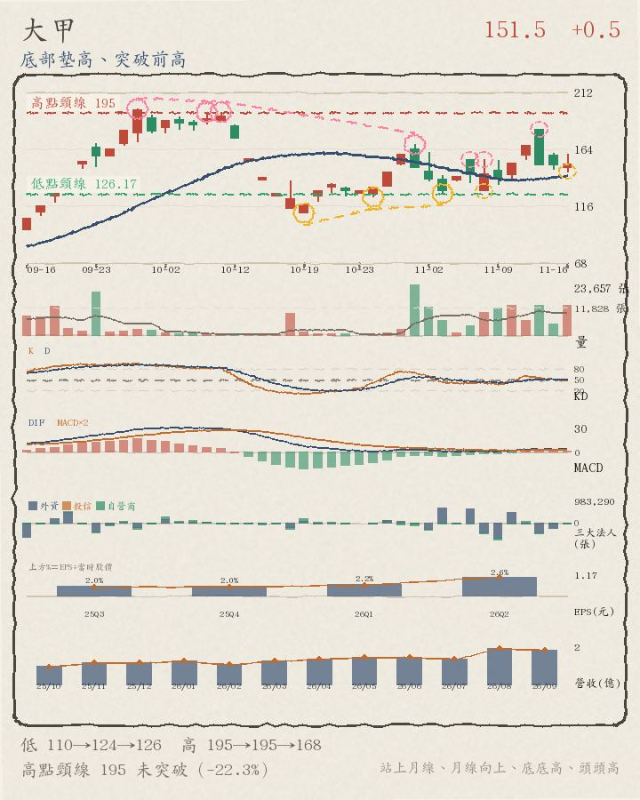
今天帶量收黑、站上月線 142.975，離高點頸線 195 還差 23.6%，底部還在墊高（但高點沒同步創高）。
- 月線位置：收盤 149 在月線 142.975 之上；5 日線 153.8 也在月線之上（短均在上）；月線向上、5 日線向上
- 量能：成交量是 20 日均量的 2.33 倍，比 20 日均量大不少；收黑卻量增，量價背離
- 關鍵價位：高點頸線 195 還沒突破，差 23.6%；最近轉折高點 181（低於 17.7%）；最近轉折低點 126.5（高於 17.8%）
- 轉折結構：低點 110、123.5、126.5 墊高 15.0%（底底高），但高點 195、168、181 沒有同步創高；還沒確認的轉折低點 11-06 128.5、11-17 139.5；還沒確認的轉折高點 11-05 155、11-06 155（圖上虛線小圈）
區間或轉弱 成交金額 23.58 億・全榜第 68 名（上櫃第 18 名）
好條件 4/4：跌破前低、在月線之下、月線下彎、外資買超
不好條件 0/5：無

今天帶量收黑、跌破月線 1096.85，跌破前一個轉折低點（高點頸線 1680 還在收盤上方），轉折還沒走出明顯方向。
- 月線位置：收盤 773 在月線 1096.85 之下；5 日線 909.8 也在月線之下（短均在下）；月線走平或向下、5 日線走平或向下
- 量能：成交量是 20 日均量的 1.50 倍，比 20 日均量大不少；收黑卻量增，量價背離
- 關鍵價位：高點頸線 1680 還沒突破、還在收盤上方 54.0%；最近轉折高點 1060（低於 27.1%）；最近轉折低點 864（低於 10.5%）
- 轉折結構：低點 1180、1180、864 與高點 1680、1360、1060 都沒有明顯遞增，屬於區間震盪或轉弱；還沒確認的轉折低點 11-17 773；還沒確認的轉折高點 11-02 1210（圖上虛線小圈）
區間或轉弱 成交金額 19.22 億・全榜第 69 名（上櫃第 19 名）
好條件 3/4：在月線之下、月線下彎、外資買超
不好條件 0/5：無

今天收黑、跌破月線 318.2，離高點頸線 385.5 還差 28.7%，轉折還沒走出明顯方向。
- 月線位置：收盤 275 在月線 318.2 之下；5 日線 290.5 也在月線之下（短均在下）；月線走平或向下、5 日線走平或向下
- 量能：成交量是 20 日均量的 1.02 倍，跟 20 日均量差不多
- 關鍵價位：高點頸線 385.5 還沒突破，差 28.7%；最近轉折高點 323（低於 14.9%）；最近轉折低點 270（高於 1.9%）
- 轉折結構：低點 328、328、270 與高點 385.5、378.5、323 都沒有明顯遞增，屬於區間震盪或轉弱；還沒確認的轉折低點 11-12 292.5、11-17 263；還沒確認的轉折高點 11-12 316.5（圖上虛線小圈）
區間或轉弱 成交金額 18.65 億・全榜第 70 名（上櫃第 20 名）
好條件 2/4：在月線之下、月線下彎
不好條件 2/5：量價攻擊（收紅＋大量）、外資賣超
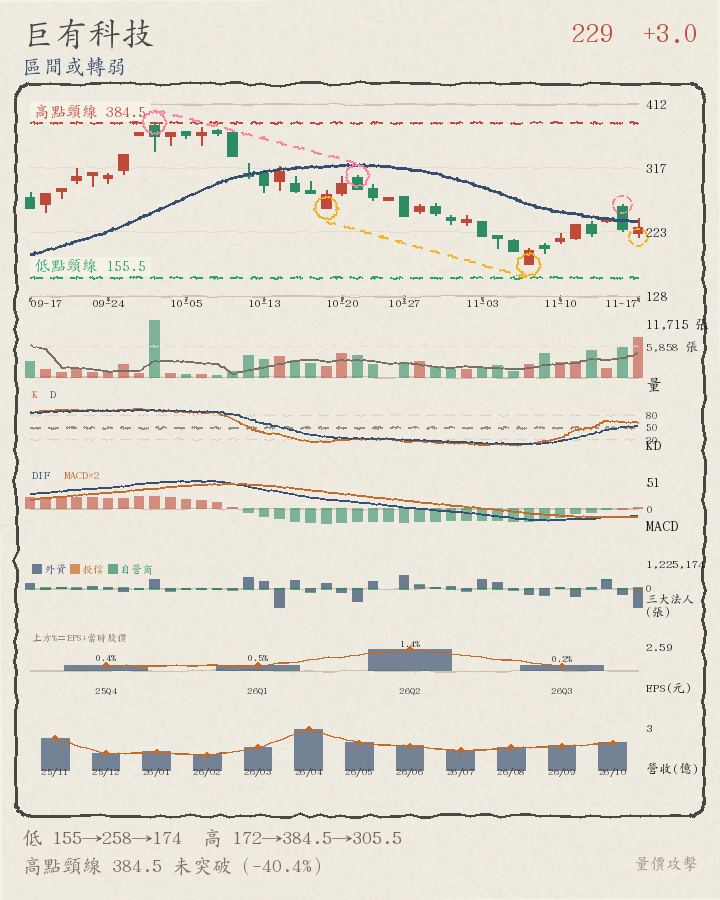
今天帶量收紅、跌破月線 237.5，離高點頸線 384.5 還差 40.4%，轉折還沒走出明顯方向。
- 月線位置：收盤 229 在月線 237.5 之下；5 日線 230.4 也在月線之下（短均在下）；月線走平或向下、5 日線向上
- 量能：成交量是 20 日均量的 2.70 倍，比 20 日均量大不少；收紅又量增，量價配合
- 關鍵價位：高點頸線 384.5 還沒突破，差 40.4%；最近轉折高點 305.5（低於 25.0%）；最近轉折低點 174.5（高於 31.2%）
- 轉折結構：低點 155、258、174.5 與高點 172、384.5、305.5 都沒有明顯遞增，屬於區間震盪或轉弱；還沒確認的轉折低點 11-17 215；還沒確認的轉折高點 11-16 263（圖上虛線小圈）